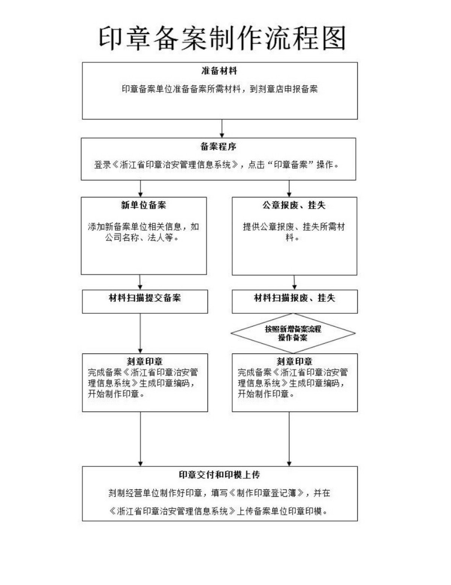
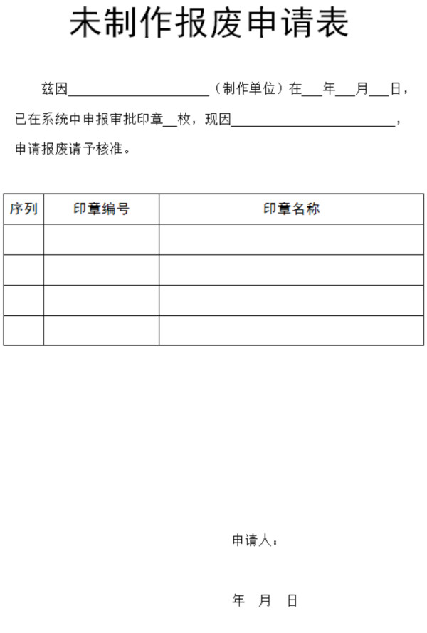

| 服务指南 |
|---|
| 法律法规 |
| 标题 | 操作 |
|---|---|
| 公章刻制备案服务指南 | 查看全文 |
| 印章备案制作流程 | 查看全文 |
| 印章备案所需材料 | 查看全文 |
| 印章未制作报废申请表 | 查看全文 |
| 标题 | 操作 |
|---|---|
| 中华人民共和国电子签名法 | 查看全文 |
| 中华人民共和国治安管理处罚条例 | 查看全文 |
| 浙江省印章刻制治安管理办法（省政府令第225号) | 查看全文 |
| 印铸刻字业暂行管理规则1951.8.15 | 查看全文 |
| 印章治安管理信息系统标准（中华人民共和国公共安全行业标准 ） | 查看全文 |
| 社会团体印章管理规定 | 查看全文 |
| 社会力量办学印章管理暂行规定 | 查看全文 |
| 民办非企业单位印章管理规定 | 查看全文 |
| 国务院关于国家行政机关和企业事业单位社会团体印章管理的规定-国发[1999]25号 | 查看全文 |
| 国家税务总局关于发票专用章式样有关问题的公告-2011年第7号 | 查看全文 |
| 关于规范村民委员会印章制发使用和管理工作的意见 | 查看全文 |
公章刻制备案服务指南
一、适用范围
涉及内容: 依法为公章刻制信息进行备案； 涉及对象:公章刻制经营单位。二、事项审查类型
即审即办。三、审批依据
国务院印发《关于第三批取中央指定地方实施行政许可事项的决定》第九项：取消县级公安机关对公章刻制 公安机关对公章刻制审批后，实行公章刻制备案管理。四、受理机构
县级人民政府公安机关。五、决定机构
县级人民政府公安机关。六、数量限制
无数量限制。七、申请条件
备案材料齐全且符合法定形式。八、禁止性要求
无。九、申请材料目录
（一）需要刻制公章的单位或者机构的设立批准文件或登记证书（复印件一份）； （二）刻制公章委托函（原件一份）； （三）对于公章被抢、被盗或者因其他原因丢失需要重新刻制公章的，提供单位或者机构所在地设区的市以上公开发行报纸的作废声明（原件一份）； （四）公章刻制经办人身份证（复印件一份）； （五）承刻公章的印模信息（原件一份）。十、申请接收
申请方式：现场申请、网上申请等方式； 联系电话：由县级人民政府公安机关公布； 办公地址：由县级人民政府公安机关公布； 传真：由县级人民政府公安机关公布。十一、办理基本流程
申请—受理—备案成功。。十二、办理方式
现场办理、网上办理。十三、办结时限
现场办结。十四、收费依据及标准
不收费。十五、审批结果
符合备案要求的，告知备案成功；不符合备案要求的，出具补正通知（或不予确认）。十六、结果送达
当场告知（或通过系统确认）、短信告知等方式。十七、行政相对人权利和义务
（一）符合法定条件、标准的，申请人有依法取得行政许可的平等权利，行政机关不得歧视； （二）行政机关依法作出不予行政许可的书面决定的，应当说明理由，并告知申请人享有依法申请行政复议或者提起行政诉讼权利； （三）行政许可直接涉及申请人与他人之间重大利益关系的，行政机关在作出行政许可决定前，应当告知申请人、利害关系人享有要求听证的权利；申请人、利害关系人在被告知听证权利之日起五日内提出听证申请的，行政机关应当在二十日内组织听证； （四）申请人申请行政许可，应当如实向行政机关提交有关材料和反映真实情况，并对其申请材料实质内容的真实性负责。十八、咨询途径
由县级人民政府公安机关公布。十九、监督投诉渠道
由县级人民政府公安机关公布。二十、办公地址和时间
办公地址：由县级人民政府公安机关公布； 办公时间：由县级人民政府公安机关公布。二十一、办理进程和结果公开查询
由县级人民政府公安机关公布。
新刻制公章备案材料
一、国家机关刻制印章需提交的备案材料
1、政府办公厅（室）或编制委员会的“三定”（定职能、定内设机构、定人员编制）方案批文；
2、政府办公厅（室）或编制委员会的介绍信；
3、法定代表人本人办理的，须持法定代表人身份证原件；法定代表人委托他人办理的，须持法定代表人的委托书、身份证复印件和承办人的身份证原件。
二、社会团体、民办非企业刻制印章需提交的备案材料
1、民政部门核发的社团、民办非企业登记证书；
2、法定代表人本人办理的，须持法定代表人身份证原件；法定代表人委托他人办理的，须持法定代表人的委托书、身份证复印件和承办人的身份证原件。
三、企业刻制印章需提交的备案材料
1、《工商营业执照》；
2、法定代表人本人办理的，须持法定代表人身份证原件；法定代表人委托他人办理的，须持法定代表人的委托书、身份证复印件和承办人的身份证原件。
四、事业单位刻制印章需提交的备案材料
1、上级主管部门的批文以及介绍信；
2、法定代表人本人办理的，须持法定代表人身份证原件；法定代表人委托他人办理的，须持法定代表人的委托书、身份证复印件和承办人的身份证原件。
五、学校刻制印章需提交的备案材料
1、上级主管部门的批文以及介绍信；
2、法定代表人登记证书；
3、法人本人办理的，须持法定代表人身份证原件；法定代表人委托他人办理的，须持法定代表人的委托书、身份证复印件和承办人的身份证原件。
六、驻杭部队刻制印章需提交的备案材料
1、部队的批文以及介绍信；
2、承办人军官证或身份证。
七、外地驻杭办事机构刻制印章需提交的备案材料
1、外地驻杭州办事机构登记证；
2、法定代表人本人办理的，须持法定代表人身份证原件；法定代表人委托他人办理的，须持法定代表人的委托书、身份证复印件和承办人的身份证原件。
八、医疗机构刻制印章需提交的备案材料
1、企业性质单位以《营业执照》名称为准，事业性质单位按照《事业单位登记证书》名称为准。
2、法定代表人本人办理的，须持法定代表人身份证原件；法定代表人委托他人办理的，须持法定代表人的委托书、身份证复印件和承办人的身份证原件。
九、其它组织刻制印章需提交的备案材料
1、机关、企业、事业单位的工会刻制公章，须持同级机关工委或总工会的批文（介绍信）、承办人身份证；
2、报关专用章，须持海关的报关证书、单位介绍信、承办人身份证原件；
3、业主委员会刻制印章，须持主管部门备案证明、承办人身份证原件；
4、钢印：
（1）机关、事业单位、社会团体刻制钢印，须持主管部门的介绍信、证明以及承办人身份证原件；
（2）企业刻制钢印，须持《营业执照》、单位介绍信、承办人身份证原件；
（3）学校刻制钢印，须持教委介绍信、承办人身份证原件；
（4）新闻出版单位刻制钢印，须持新闻出版局介绍信、承办人身份证原件；
（5）刻制钢印必须具备独立的法人资格，二级部门及各类培训班不得刻制钢印。
十、单位增刻财务章等其他公章需提交的证明文件和材料
1、主管部门批准同意，可以编号增刻；
2、单位介绍信；
3、法定代表人本人办理的，须持法定代表人身份证原件；法定代表人委托他人办理的，须持法定代表人的委托书、身份证复印件和承办人的身份证原件。

目 录
第一章 总则
第二章 数据电文
第三章 电子签名与认证
第四章 法律责任
第五章 附则
第一章 总则
第一条 为了规范电子签名行为，确立电子签名的法律效力，维护有关各方的合法权益，制定本法。
第二条 本法所称电子签名，是指数据电文中以电子形式所含、所附用于识别签名人身份并表明签名人认可其中内容的数据。
本法所称数据电文，是指以电子、光学、磁或者类似手段生成、发送、接收或者储存的信息。
第三条 民事活动中的合同或者其他文件、单证等文书，当事人可以约定使用或者不使用电子签名、数据电文。
当事人约定使用电子签名、数据电文的文书，不得仅因为其采用电子签名、数据电文的形式而否定其法律效力。
前款规定不适用下列文书：
（一）涉及婚姻、收养、继承等人身关系的；
（二）涉及土地、房屋等不动产权益转让的；
（三）涉及停止供水、供热、供气、供电等公用事业服务的；
（四）法律、行政法规规定的不适用电子文书的其他情形。
第二章 数据电文
第四条 能够有形地表现所载内容，并可以随时调取查用的数据电文，视为符合法律、法规要求的书面形式。
第五条 符合下列条件的数据电文，视为满足法律、法规规定的原件形式要求：
（一）能够有效地表现所载内容并可供随时调取查用；
（二）能够可靠地保证自最终形成时起，内容保持完整、未被更改。但是，在数据电文上增加背书以及数据交换、储存和显示过程中发生的形式变化不影响数据电文的完整性。
第六条 符合下列条件的数据电文，视为满足法律、法规规定的文件保存要求：
（一）能够有效地表现所载内容并可供随时调取查用；
（二）数据电文的格式与其生成、发送或者接收时的格式相同，或者格式不相同但是能够准确表现原来生成、发送或者接收的内容；
（三）能够识别数据电文的发件人、收件人以及发送、接收的时间。
第七条 数据电文不得仅因为其是以电子、光学、磁或者类似手段生成、发送、接收或者储存的而被拒绝作为证据使用。
第八条 审查数据电文作为证据的真实性，应当考虑以下因素：
（一）生成、储存或者传递数据电文方法的可靠性；
（二）保持内容完整性方法的可靠性；
（三）用以鉴别发件人方法的可靠性；
（四）其他相关因素。
第九条 数据电文有下列情形之一的，视为发件人发送：
（一）经发件人授权发送的；
（二）发件人的信息系统自动发送的；
（三）收件人按照发件人认可的方法对数据电文进行验证后结果相符的。
当事人对前款规定的事项另有约定的，从其约定。
第十条 法律、行政法规规定或者当事人约定数据电文需要确认收讫的，应当确认收讫。发件人收到收件人的收讫确认时，数据电文视为已经收到。
第十一条 数据电文进入发件人控制之外的某个信息系统的时间，视为该数据电文的发送时间。
收件人指定特定系统接收数据电文的，数据电文进入该特定系统的时间，视为该数据电文的接收时间；未指定特定系统的，数据电文进入收件人的任何系统的首次时间，视为该数据电文的接收时间。
当事人对数据电文的发送时间、接收时间另有约定的，从其约定。
第十二条 发件人的主营业地为数据电文的发送地点，收件人的主营业地为数据电文的接收地点。没有主营业地的，其经常居住地为发送或者接收地点。
当事人对数据电文的发送地点、接收地点另有约定的，从其约定。
第三章 电子签名与认证
第十三条 电子签名同时符合下列条件的，视为可靠的电子签名：
（一）电子签名制作数据用于电子签名时，属于电子签名人专有；
（二）签署时电子签名制作数据仅由电子签名人控制；
（三）签署后对电子签名的任何改动能够被发现；
（四）签署后对数据电文内容和形式的任何改动能够被发现。
当事人也可以选择使用符合其约定的可靠条件的电子签名。
第十四条 可靠的电子签名与手写签名或者盖章具有同等的法律效力。
第十五条 电子签名人应当妥善保管电子签名制作数据。电子签名人知悉电子签名制作数据已经失密或者可能已经失密时，应当及时告知有关各方，并终止使用该电子签名制作数据。
第十六条 电子签名需要第三方认证的，由依法设立的电子认证服务提供者提供认证服务。
第十七条 提供电子认证服务，应当具备下列条件：
（一）取得企业法人资格；
（二）具有与提供电子认证服务相适应的专业技术人员和管理人员；
（三）具有与提供电子认证服务相适应的资金和经营场所；
（四）具有符合国家安全标准的技术和设备；
（五）具有国家密码管理机构同意使用密码的证明文件；
（六）法律、行政法规规定的其他条件。
第十八条 从事电子认证服务，应当向国务院信息产业主管部门提出申请，并提交符合本法第十七条规定条件的相关材料。国务院信息产业主管部门接到申请后经依法审查，征求国务院商务主管部门等有关部门的意见后，自接到申请之日起四十五日内作出许可或者不予许可的决定。予以许可的，颁发电子认证许可证书；不予许可的，应当书面通知申请人并告知理由。
取得认证资格的电子认证服务提供者，应当按照国务院信息产业主管部门的规定在互联网上公布其名称、许可证号等信息。
第十九条 电子认证服务提供者应当制定、公布符合国家有关规定的电子认证业务规则，并向国务院信息产业主管部门备案。
电子认证业务规则应当包括责任范围、作业操作规范、信息安全保障措施等事项。
第二十条 电子签名人向电子认证服务提供者申请电子签名认证证书，应当提供真实、完整和准确的信息。
电子认证服务提供者收到电子签名认证证书申请后，应当对申请人的身份进行查验，并对有关材料进行审查。
第二十一条 电子认证服务提供者签发的电子签名认证证书应当准确无误，并应当载明下列内容：
（一）电子认证服务提供者名称；
（二）证书持有人名称；
（三）证书序列号；
（四）证书有效期；
（五）证书持有人的电子签名验证数据；
（六）电子认证服务提供者的电子签名；
（七）国务院信息产业主管部门规定的其他内容。
第二十二条 电子认证服务提供者应当保证电子签名认证证书内容在有效期内完整、准确，并保证电子签名依赖方能够证实或者了解电子签名认证证书所载内容及其他有关事项。
第二十三条 电子认证服务提供者拟暂停或者终止电子认证服务的，应当在暂停或者终止服务九十日前，就业务承接及其他有关事项通知有关各方。
电子认证服务提供者拟暂停或者终止电子认证服务的，应当在暂停或者终止服务六十日前向国务院信息产业主管部门报告，并与其他电子认证服务提供者就业务承接进行协商，作出妥善安排。
电子认证服务提供者未能就业务承接事项与其他电子认证服务提供者达成协议的，应当申请国务院信息产业主管部门安排其他电子认证服务提供者承接其业务。
电子认证服务提供者被依法吊销电子认证许可证书的，其业务承接事项的处理按照国务院信息产业主管部门的规定执行。
第二十四条 电子认证服务提供者应当妥善保存与认证相关的信息，信息保存期限至少为电子签名认证证书失效后五年。
第二十五条 国务院信息产业主管部门依照本法制定电子认证服务业的具体管理办法，对电子认证服务提供者依法实施监督管理。
第二十六条 经国务院信息产业主管部门根据有关协议或者对等原则核准后，中华人民共和国境外的电子认证服务提供者在境外签发的电子签名认证证书与依照本法设立的电子认证服务提供者签发的电子签名认证证书具有同等的法律效力。
第四章 法律责任
第二十七条 电子签名人知悉电子签名制作数据已经失密或者可能已经失密未及时告知有关各方、并终止使用电子签名制作数据，未向电子认证服务提供者提供真实、完整和准确的信息，或者有其他过错，给电子签名依赖方、电子认证服务提供者造成损失的，承担赔偿责任。
第二十八条 电子签名人或者电子签名依赖方因依据电子认证服务提供者提供的电子签名认证服务从事民事活动遭受损失，电子认证服务提供者不能证明自己无过错的，承担赔偿责任。
第二十九条 未经许可提供电子认证服务的，由国务院信息产业主管部门责令停止违法行为；有违法所得的，没收违法所得；违法所得三十万元以上的，处违法所得一倍以上三倍以下的罚款；没有违法所得或者违法所得不足三十万元的，处十万元以上三十万元以下的罚款。
第三十条 电子认证服务提供者暂停或者终止电子认证服务，未在暂停或者终止服务六十日前向国务院信息产业主管部门报告的，由国务院信息产业主管部门对其直接负责的主管人员处一万元以上五万元以下的罚款。
第三十一条 电子认证服务提供者不遵守认证业务规则、未妥善保存与认证相关的信息，或者有其他违法行为的，由国务院信息产业主管部门责令限期改正；逾期未改正的，吊销电子认证许可证书，其直接负责的主管人员和其他直接责任人员十年内不得从事电子认证服务。吊销电子认证许可证书的，应当予以公告并通知工商行政管理部门。
第三十二条 伪造、冒用、盗用他人的电子签名，构成犯罪的，依法追究刑事责任；给他人造成损失的，依法承担民事责任。
第三十三条 依照本法负责电子认证服务业监督管理工作的部门的工作人员，不依法履行行政许可、监督管理职责的，依法给予行政处分；构成犯罪的，依法追究刑事责任。
第五章 附则
第三十四条 本法中下列用语的含义：
（一）电子签名人，是指持有电子签名制作数据并以本人身份或者以其所代表的人的名义实施电子签名的人；
（二）电子签名依赖方，是指基于对电子签名认证证书或者电子签名的信赖从事有关活动的人；
（三）电子签名认证证书，是指可证实电子签名人与电子签名制作数据有联系的数据电文或者其他电子记录；
（四）电子签名制作数据，是指在电子签名过程中使用的，将电子签名与电子签名人可靠地联系起来的字符、编码等数据；
（五）电子签名验证数据，是指用于验证电子签名的数据，包括代码、口令、算法或者公钥等。
第三十五条 国务院或者国务院规定的部门可以依据本法制定政务活动和其他社会活动中使用电子签名、数据电文的具体办法。
第三十六条 本法自２００５年４月１日起施行。
第一章 总则
第一条 为维护社会治安秩序，保障公共安全，保护公民、法人和其他组织的合法权益，规范和保障公安机关及其人民警察依法履行治安管理职责，制定本法。
第二条 扰乱公共秩序，妨害公共安全，侵犯人身权利、财产权利，妨害社会管理，具有社会危害性，依照《中华人民共和国刑法》的规定构成犯罪的，依法追究刑事责任；尚不够刑事处罚的，由公安机关依照本法给予治安管理处罚。
第三条 治安管理处罚的程序，适用本法的规定；本法没有规定的，适用《中华人民共和国行政处罚法》的有关规定。
第四条 在中华人民共和国领域内发生的违反治安管理行为，除法律有特别规定的外，适用本法。
在中华人民共和国船舶和航空器内发生的违反治安管理行为，除法律有特别规定的外，适用本法。
第五条 治安管理处罚必须以事实为依据，与违反治安管理行为的性质、情节以及社会危害程度相当。
实施治安管理处罚，应当公开、公正，尊重和保障人权，保护公民的人格尊严。
办理治安案件应当坚持教育与处罚相结合的原则。
第六条 各级人民政府应当加强社会治安综合治理，采取有效措施，化解社会矛盾，增进社会和谐，维护社会稳定。
第七条 国务院公安部门负责全国的治安管理工作。县级以上地方各级人民政府公安机关负责本行政区域内的治安管理工作。 治安案件的管辖由国务院公安部门规定。
第八条 违反治安管理的行为对他人造成损害的，行为人或者其监护人应当依法承担民事责任。
第九条 对于因民间纠纷引起的打架斗殴或者损毁他人财物等违反治安管理行为，情节较轻的，公安机关可以调解处理。经公安机关调解，当事人达成协议的，不予处罚。经调解未达成协议或者达成协议后不履行的，公安机关应当依照本法的规定对违反治安管理行为人给予处罚，并告知当事人可以就民事争议依法向人民法院提起民事诉讼。
第二章 处罚的种类和适用
第十条 治安管理处罚的种类分为：
(一)警告；
(二)罚款；
(三)行政拘留；
(四)吊销公安机关发放的许可证。
对违反治安管理的外国人，可以附加适用限期出境或者驱逐出境。
第十一条 办理治安案件所查获的毒品、淫秽物品等违禁品，赌具、赌资，吸食、注射毒品的用具以及直接用于实施违反治安管理行为的本人所有的工具，应当收缴，按照规定处理。
违反治安管理所得的财物，追缴退还被侵害人；没有被侵害人的，登记造册，公开拍卖或者按照国家有关规定处理，所得款项上缴国库。
第十二条 已满十四周岁不满十八周岁的人违反治安管理的，从轻或者减轻处罚；不满十四周岁的人违反治安管理的，不予处罚，但是应当责令其监护人严加管教。
第十三条 精神病人在不能辨认或者不能控制自己行为的时候违反治安管理的，不予处罚，但是应当责令其监护人严加看管和治疗。间歇性的精神病人在精神正常的时候违反治安管理的，应当给予处罚。
第十四条 盲人或者又聋又哑的人违反治安管理的，可以从轻、减轻或者不予处罚。
第十五条 醉酒的人违反治安管理的，应当给予处罚。
醉酒的人在醉酒状态中，对本人有危险或者对他人的人身、财产或者公共安全有威胁的，应当对其采取保护性措施约束至酒醒。
第十六条 有两种以上违反治安管理行为的，分别决定，合并执行。行政拘留处罚合并执行的，最长不超过二十日。
第十七条 共同违反治安管理的，根据违反治安管理行为人在违反治安管理行为中所起的作用，分别处罚。
教唆、胁迫、诱骗他人违反治安管理的，按照其教唆、胁迫、诱骗的行为处罚。
第十八条 单位违反治安管理的，对其直接负责的主管人员和其他直接责任人员依照本法的规定处罚。其他法律、行政法规对同一行为规定给予单位处罚的，依照其规定处罚。
第十九条 违反治安管理有下列情形之一的，减轻处罚或者不予处罚：
(一)情节特别轻微的；
(二)主动消除或者减轻违法后果，并取得被侵害人谅解的；
(三)出于他人胁迫或者诱骗的；
(四)主动投案，向公安机关如实陈述自己的违法行为的；
(五)有立功表现的。
第二十条 违反治安管理有下列情形之一的，从重处罚：
(一)有较严重后果的；
(二)教唆、胁迫、诱骗他人违反治安管理的；
(三)对报案人、控告人、举报人、证人打击报复的；
(四)六个月内曾受过治安管理处罚的。
第二十一条 违反治安管理行为人有下列情形之一，依照本法应当给予行政拘留处罚的，不执行行政拘留处罚：
(一)已满十四周岁不满十六周岁的；
(二)已满十六周岁不满十八周岁，初次违反治安管理的；
(三)七十周岁以上的；
(四)怀孕或者哺乳自己不满一周岁婴儿的。
第二十二条 违反治安管理行为在六个月内没有被公安机关发现的，不再处罚。
前款规定的期限，从违反治安管理行为发生之日起计算；违反治安管理行为有连续或者继续状态的，从行为终了之日起计算。 第三章 违反治安管理的行为和处罚
第一节 扰乱公共秩序的行为和处罚
第二十三条 有下列行为之一的，处警告或者二百元以下罚款；情节较重的，处五日以上十日以下拘留，可以并处五百元以下罚款：
(一)扰乱机关、团体、企业、事业单位秩序，致使工作、生产、营业、医疗、教学、科研不能正常进行，尚未造成严重损失的；
(二)扰乱车站、港口、码头、机场、商场、公园、展览馆或者其他公共场所秩序的；
(三)扰乱公共汽车、电车、火车、船舶、航空器或者其他公共交通工具上的秩序的；
(四)非法拦截或者强登、扒乘机动车、船舶、航空器以及其他交通工具，影响交通工具正常行驶的；
(五)破坏依法进行的选举秩序的。
聚众实施前款行为的，对首要分子处十日以上十五日以下拘留，可以并处一千元以下罚款。
第二十四条 有下列行为之一，扰乱文化、体育等大型群众性活动秩序的，处警告或者二百元以下罚款；情节严重的，处五日以上十日以下拘留，可以并处五百元以下罚款：
(一)强行进入场内的；
(二)违反规定，在场内燃放烟花爆竹或者其他物品的；
(三)展示侮辱性标语、条幅等物品的；
(四)围攻裁判员、运动员或者其他工作人员的；
(五)向场内投掷杂物，不听制止的；
(六)扰乱大型群众性活动秩序的其他行为。
因扰乱体育比赛秩序被处以拘留处罚的，可以同时责令其十二个月内不得进入体育场馆观看同类比赛；违反规定进入体育场馆的，强行带离现场。
第二十五条 有下列行为之一的，处五日以上十日以下拘留，可以并处五百元以下罚款；情节较轻的，处五日以下拘留或者五百元以下罚款：
(一)散布谣言，谎报险情、疫情、警情或者以其他方法故意扰乱公共秩序的；
(二)投放虚假的爆炸性、毒害性、放射性、腐蚀性物质或者传染病病原体等危险物质扰乱公共秩序的；
(三)扬言实施放火、爆炸、投放危险物质扰乱公共秩序的。
第二十六条 有下列行为之一的，处五日以上十日以下拘留，可以并处五百元以下罚款；情节较重的，处十日以上十五日以下拘留，可以并处一千元以下罚款：
(一)结伙斗殴的；
(二)追逐、拦截他人的；
(三)强拿硬要或者任意损毁、占用公私财物的；
(四)其他寻衅滋事行为。
第二十七条 有下列行为之一的，处十日以上十五日以下拘留，可以并处一千元以下罚款；情节较轻的，处五日以上十日以下拘留，可以并处五百元以下罚款：
(一)组织、教唆、胁迫、诱骗、煽动他人从事邪教、会道门活动或者利用邪教、会道门、迷信活动，扰乱社会秩序、损害他人身体健康的；
(二)冒用宗教、气功名义进行扰乱社会秩序、损害他人身体健康活动的。
第二十八条 违反国家规定，故意干扰无线电业务正常进行的，或者对正常运行的无线电台(站)产生有害干扰，经有关主管部门指出后，拒不采取有效措施消除的，处五日以上十日以下拘留；情节严重的，处十日以上十五日以下拘留。
第二十九条 有下列行为之一的，处五日以下拘留；情节较重的，处五日以上十日以下拘留：
(一)违反国家规定，侵入计算机信息系统，造成危害的；
(二)违反国家规定，对计算机信息系统功能进行删除、修改、增加、干扰，造成计算机信息系统不能正常运行的；
(三)违反国家规定，对计算机信息系统中存储、处理、传输的数据和应用程序进行删除、修改、增加的；
(四)故意制作、传播计算机病毒等破坏性程序，影响计算机信息系统正常运行的。
第二节 妨害公共安全的行为和处罚
第三十条 违反国家规定，制造、买卖、储存、运输、邮寄、携带、使用、提供、处置爆炸性、毒害性、放射性、腐蚀性物质或者传染病病原体等危险物质的，处十日以上十五日以下拘留；情节较轻的，处五日以上十日以下拘留。
第三十一条 爆炸性、毒害性、放射性、腐蚀性物质或者传染病病原体等危险物质被盗、被抢或者丢失，未按规定报告的，处五日以下拘留；故意隐瞒不报的，处五日以上十日以下拘留。
第三十二条 非法携带枪支、弹药或者弩、匕首等国家规定的管制器具的，处五日以下拘留，可以并处五百元以下罚款；情节较轻的，处警告或者二百元以下罚款。
非法携带枪支、弹药或者弩、匕首等国家规定的管制器具进入公共场所或者公共交通工具的，处五日以上十日以下拘留，可以并处五百元以下罚款。
第三十三条 有下列行为之一的，处十日以上十五日以下拘留：
(一)盗窃、损毁油气管道设施、电力电信设施、广播电视设施、水利防汛工程设施，或者水文监测、测量、气象测报、环境监测、地质监测、地震监测等公共设施的；
(二)移动、损毁国家边境的界碑、界桩以及其他边境标志、边境设施或者领土、领海标志设施的；
(三)非法进行影响国(边)界线走向的活动或者修建有碍国(边)境管理的设施的。
第三十四条 盗窃、损坏、擅自移动使用中的航空设施，或者强行进入航空器驾驶舱的，处十日以上十五日以下拘留。
在使用中的航空器上使用可能影响导航系统正常功能的器具、工具，不听劝阻的，处五日以下拘留或者五百元以下罚款。
第三十五条 有下列行为之一的，处五日以上十日以下拘留，可以并处五百元以下罚款；情节较轻的，处五日以下拘留或者五百元以下罚款：
(一)盗窃、损毁或者擅自移动铁路设施、设备、机车车辆配件或者安全标志的；
(二)在铁路线路上放置障碍物，或者故意向列车投掷物品的；
(三)在铁路线路、桥梁、涵洞处挖掘坑穴、采石取沙的；
(四)在铁路线路上私设道口或者平交过道的。
第三十六条 擅自进入铁路防护网或者火车来临时在铁路线路上行走坐卧、抢越铁路，影响行车安全的，处警告或者二百元以下罚款。
第三十七条 有下列行为之一的，处五日以下拘留或者五百元以下罚款；情节严重的，处五日以上十日以下拘留，可以并处五百元以下罚款：
(一)未经批准，安装、使用电网的，或者安装、使用电网不符合安全规定的；
(二)在车辆、行人通行的地方施工，对沟井坎穴不设覆盖物、防围和警示标志的，或者故意损毁、移动覆盖物、防围和警示标志的；
(三)盗窃、损毁路面井盖、照明等公共设施的。
第三十八条 举办文化、体育等大型群众性活动，违反有关规定，有发生安全事故危险的，责令停止活动，立即疏散。对组织者处五日以上十日以下拘留，并处二百元以上五百元以下罚款；情节较轻的，处五日以下拘留或者五百元以下罚款。
第三十九条 旅馆、饭店、影剧院、娱乐场、运动场、展览馆或者其他供社会公众活动的场所的经营管理人员，违反安全规定，致使该场所有发生安全事故危险，经公安机关责令改正，拒不改正的，处五日以下拘留。
第三节 侵犯人身权利、财产权利的行为和处罚
第四十条 有下列行为之一的，处十日以上十五日以下拘留，并处五百元以上一千元以下罚款；情节较轻的，处五日以上十日以下拘留，并处二百元以上五百元以下罚款：
(一)组织、胁迫、诱骗不满十六周岁的人或者残疾人进行恐怖、残忍表演的；
(二)以暴力、威胁或者其他手段强迫他人劳动的；
(三)非法限制他人人身自由、非法侵入他人住宅或者非法搜查他人身体的。
第四十一条 胁迫、诱骗或者利用他人乞讨的，处十日以上十五日以下拘留，可以并处一千元以下罚款。
反复纠缠、强行讨要或者以其他滋扰他人的方式乞讨的，处五日以下拘留或者警告。
第四十二条 有下列行为之一的，处五日以下拘留或者五百元以下罚款；情节较重的，处五日以上十日以下拘留，可以并处五百元以下罚款：
(一)写恐吓信或者以其他方法威胁他人人身安全的；
(二)公然侮辱他人或者捏造事实诽谤他人的；
(三)捏造事实诬告陷害他人，企图使他人受到刑事追究或者受到治安管理处罚的；
(四)对证人及其近亲属进行威胁、侮辱、殴打或者打击报复的；
(五)多次发送淫秽、侮辱、恐吓或者其他信息，干扰他人正常生活的；
(六)偷窥、偷拍、窃听、散布他人隐私的。
第四十三条 殴打他人的，或者故意伤害他人身体的，处五日以上十日以下拘留，并处二百元以上五百元以下罚款；情节较轻的，处五日以下拘留或者五百元以下罚款。
有下列情形之一的，处十日以上十五日以下拘留，并处五百元以上一千元以下罚款：
(一)结伙殴打、伤害他人的；
(二)殴打、伤害残疾人、孕妇、不满十四周岁的人或者六十周岁以上的人的；
(三)多次殴打、伤害他人或者一次殴打、伤害多人的。
第四十四条 猥亵他人的，或者在公共场所故意裸露身体，情节恶劣的，处五日以上十日以下拘留；猥亵智力残疾人、精神病人、不满十四周岁的人或者有其他严重情节的，处十日以上十五日以下拘留。
第四十五条 有下列行为之一的，处五日以下拘留或者警告：
(一)虐待家庭成员，被虐待人要求处理的；
(二)遗弃没有独立生活能力的被扶养人的。
第四十六条 强买强卖商品，强迫他人提供服务或者强迫他人接受服务的，处五日以上十日以下拘留，并处二百元以上五百元以下罚款；情节较轻的，处五日以下拘留或者五百元以下罚款。
第四十七条 煽动民族仇恨、民族歧视，或者在出版物、计算机信息网络中刊载民族歧视、侮辱内容的，处十日以上十五日以下拘留，可以并处一千元以下罚款。
第四十八条 冒领、隐匿、毁弃、私自开拆或者非法检查他人邮件的，处五日以下拘留或者五百元以下罚款。
第四十九条 盗窃、诈骗、哄抢、抢夺、敲诈勒索或者故意损毁公私财物的，处五日以上十日以下拘留，可以并处五百元以下罚款；情节较重的，处十日以上十五日以下拘留，可以并处一千元以下罚款。
第四节 妨害社会管理的行为和处罚
第五十条 有下列行为之一的，处警告或者二百元以下罚款；情节严重的，处五日以上十日以下拘留，可以并处五百元以下罚款：
第五十条 有下列行为之一的，处警告或者二百元以下罚款；情节严重的，处五日以上十日以下拘留，可以并处五百元以下罚款：
(一)拒不执行人民政府在紧急状态情况下依法发布的决定、命令的；
(二)阻碍国家机关工作人员依法执行职务的；
(三)阻碍执行紧急任务的消防车、救护车、工程抢险车、警车等车辆通行的；
(四)强行冲闯公安机关设置的警戒带、警戒区的。
阻碍人民警察依法执行职务的，从重处罚。
第五十一条 冒充国家机关工作人员或者以其他虚假身份招摇撞骗的，处五日以上十日以下拘留，可以并处五百元以下罚款；情节较轻的，处五日以下拘留或者五百元以下罚款。
冒充军警人员招摇撞骗的，从重处罚。
第五十二条 有下列行为之一的，处十日以上十五日以下拘留，可以并处一千元以下罚款；情节较轻的，处五日以上十日以下拘留，可以并处五百元以下罚款：
(一)伪造、变造或者买卖国家机关、人民团体、企业、事业单位或者其他组织的公文、证件、证明文件、印章的；
(二)买卖或者使用伪造、变造的国家机关、人民团体、企业、事业单位或者其他组织的公文、证件、证明文件的；
(三)伪造、变造、倒卖车票、船票、航空客票、文艺演出票、体育比赛入场券或者其他有价票证、凭证的；
(四)伪造、变造船舶户牌，买卖或者使用伪造、变造的船舶户牌，或者涂改船舶发动机号码的。
第五十三条 船舶擅自进入、停靠国家禁止、限制进入的水域或者岛屿的，对船舶负责人及有关责任人员处五百元以上一千元以下罚款；情节严重的，处五日以下拘留，并处五百元以上一千元以下罚款。
第五十四条 有下列行为之一的，处十日以上十五日以下拘留，并处五百元以上一千元以下罚款；情节较轻的，处五日以下拘留或者五百元以下罚款：
(一)违反国家规定，未经注册登记，以社会团体名义进行活动，被取缔后，仍进行活动的；
(二)被依法撤销登记的社会团体，仍以社会团体名义进行活动的；
(三)未经许可，擅自经营按照国家规定需要由公安机关许可的行业的。
有前款第三项行为的，予以取缔。
取得公安机关许可的经营者，违反国家有关管理规定，情节严重的，公安机关可以吊销许可证。
第五十五条 煽动、策划非法集会、游行、示威，不听劝阻的，处十日以上十五日以下拘留。
第五十六条 旅馆业的工作人员对住宿的旅客不按规定登记姓名、身份证件种类和号码的，或者明知住宿的旅客将危险物质带入旅馆，不予制止的，处二百元以上五百元以下罚款。
旅馆业的工作人员明知住宿的旅客是犯罪嫌疑人员或者被公安机关通缉的人员，不向公安机关报告的，处二百元以上五百元以下罚款；情节严重的，处五日以下拘留，可以并处五百元以下罚款。
第五十七条 房屋出租人将房屋出租给无身份证件的人居住的，或者不按规定登记承租人姓名、身份证件种类和号码的，处二百元以上五百元以下罚款。
房屋出租人明知承租人利用出租房屋进行犯罪活动，不向公安机关报告的，处二百元以上五百元以下罚款；情节严重的，处五日以下拘留，可以并处五百元以下罚款。
第五十八条 违反关于社会生活噪声污染防治的法律规定，制造噪声干扰他人正常生活的，处警告；警告后不改正的，处二百元以上五百元以下罚款。
第五十九条 有下列行为之一的，处五百元以上一千元以下罚款；情节严重的，处五日以上十日以下拘留，并处五百元以上一千元以下罚款：
(一)典当业工作人员承接典当的物品，不查验有关证明、不履行登记手续，或者明知是违法犯罪嫌疑人、赃物，不向公安机关报告的；
(二)违反国家规定，收购铁路、油田、供电、电信、矿山、水利、测量和城市公用设施等废旧专用器材的；
(三)收购公安机关通报寻查的赃物或者有赃物嫌疑的物品的；
(四)收购国家禁止收购的其他物品的。
第六十条 有下列行为之一的，处五日以上十日以下拘留，并处二百元以上五百元以下罚款：
(一)隐藏、转移、变卖或者损毁行政执法机关依法扣押、查封、冻结的财物的；
(二)伪造、隐匿、毁灭证据或者提供虚假证言、谎报案情，影响行政执法机关依法办案的；
(三)明知是赃物而窝藏、转移或者代为销售的；
(四)被依法执行管制、剥夺政治权利或者在缓刑、保外就医等监外执行中的罪犯或者被依法采取刑事强制措施的人，有违反法律、行政法规和国务院公安部门有关监督管理规定的行为。
第六十一条 协助组织或者运送他人偷越国(边)境的，处十日以上十五日以下拘留，并处一千元以上五千元以下罚款。
第六十二条 为偷越国(边)境人员提供条件的，处五日以上十日以下拘留，并处五百元以上二千元以下罚款。
偷越国(边)境的，处五日以下拘留或者五百元以下罚款。
第六十三条 有下列行为之一的，处警告或者二百元以下罚款；情节较重的，处五日以上十日以下拘留，并处二百元以上五百元以下罚款：
(一)刻划、涂污或者以其他方式故意损坏国家保护的文物、名胜古迹的；
(二)违反国家规定，在文物保护单位附近进行爆破、挖掘等活动，危及文物安全的。
第六十四条 有下列行为之一的，处五百元以上一千元以下罚款；情节严重的，处十日以上十五日以下拘留，并处五百元以上一千元以下罚款：
(一)偷开他人机动车的；
(二)未取得驾驶证驾驶或者偷开他人航空器、机动船舶的。
第六十五条 有下列行为之一的，处五日以上十日以下拘留；情节严重的，处十日以上十五日以下拘留，可以并处一千元以下罚款：
(一)故意破坏、污损他人坟墓或者毁坏、丢弃他人尸骨、骨灰的；
(二)在公共场所停放尸体或者因停放尸体影响他人正常生活、工作秩序，不听劝阻的。
第六十六条 卖淫、嫖娼的，处十日以上十五日以下拘留，可以并处五千元以下罚款；情节较轻的，处五日以下拘留或者五百元以下罚款。
在公共场所拉客招嫖的，处五日以下拘留或者五百元以下罚款。
第六十七条 引诱、容留、介绍他人卖淫的，处十日以上十五日以下拘留，可以并处五千元以下罚款；情节较轻的，处五日以下拘留或者五百元以下罚款。
第六十八条 制作、运输、复制、出售、出租淫秽的书刊、图片、影片、音像制品等淫秽物品或者利用计算机信息网络、电话以及其他通讯工具传播淫秽信息的，处十日以上十五日以下拘留，可以并处三千元以下罚款；情节较轻的，处五日以下拘留或者五百元以下罚款。
第六十九条 有下列行为之一的，处十日以上十五日以下拘留，并处五百元以上一千元以下罚款：
(一)组织播放淫秽音像的；
(二)组织或者进行淫秽表演的；
(三)参与聚众淫乱活动的。
明知他人从事前款活动，为其提供条件的，依照前款的规定处罚。
第七十条 以营利为目的，为赌博提供条件的，或者参与赌博赌资较大的，处五日以下拘留或者五百元以下罚款；情节严重的，处十日以上十五日以下拘留，并处五百元以上三千元以下罚款。
第七十一条 有下列行为之一的，处十日以上十五日以下拘留，可以并处三千元以下罚款；情节较轻的，处五日以下拘留或者五百元以下罚款：
(一)非法种植罂粟不满五百株或者其他少量毒品原植物的；
(二)非法买卖、运输、携带、持有少量未经灭活的罂粟等毒品原植物种子或者幼苗的；
(三)非法运输、买卖、储存、使用少量罂粟壳的。
有前款第一项行为，在成熟前自行铲除的，不予处罚。
第七十二条 有下列行为之一的，处十日以上十五日以下拘留，可以并处二千元以下罚款；情节较轻的，处五日以下拘留或者五百元以下罚款：
(一)非法持有鸦片不满二百克、海洛因或者甲基苯丙胺不满十克或者其他少量毒品的；
(二)向他人提供毒品的；
(三)吸食、注射毒品的；
(四)胁迫、欺骗医务人员开具麻醉药品、精神药品的。
第七十三条 教唆、引诱、欺骗他人吸食、注射毒品的，处十日以上十五日以下拘留，并处五百元以上二千元以下罚款。
第七十四条 旅馆业、饮食服务业、文化娱乐业、出租汽车业等单位的人员，在公安机关查处吸毒、赌博、卖淫、嫖娼活动时，为违法犯罪行为人通风报信的，处十日以上十五日以下拘留。
第七十五条 饲养动物，干扰他人正常生活的，处警告；警告后不改正的，或者放任动物恐吓他人的，处二百元以上五百元以下罚款。
驱使动物伤害他人的，依照本法第四十三条第一款的规定处罚。
第七十六条 有本法第六十七条、第六十八条、第七十条的行为，屡教不改的，可以按照国家规定采取强制性教育措施。
第四章 处罚程序
第一节 调查
第七十七条 公安机关对报案、控告、举报或者违反治安管理行为人主动投案，以及其他行政主管部门、司法机关移送的违反治安管理案件，应当及时受理，并进行登记。
第七十八条 公安机关受理报案、控告、举报、投案后，认为属于违反治安管理行为的，应当立即进行调查；认为不属于违反治安管理行为的，应当告知报案人、控告人、举报人、投案人，并说明理由。
第七十九条 公安机关及其人民警察对治安案件的调查，应当依法进行。严禁刑讯逼供或者采用威胁、引诱、欺骗等非法手段收集证据。
以非法手段收集的证据不得作为处罚的根据。
第八十条 公安机关及其人民警察在办理治安案件时，对涉及的国家秘密、商业秘密或者个人隐私，应当予以保密。
第八十一条 人民警察在办理治安案件过程中，遇有下列情形之一的，应当回避；违反治安管理行为人、被侵害人或者其法定代理人也有权要求他们回避：
(一)是本案当事人或者当事人的近亲属的；
(二)本人或者其近亲属与本案有利害关系的；
(三)与本案当事人有其他关系，可能影响案件公正处理的。
人民警察的回避，由其所属的公安机关决定；公安机关负责人的回避，由上一级公安机关决定。
第八十二条 需要传唤违反治安管理行为人接受调查的，经公安机关办案部门负责人批准，使用传唤证传唤。对现场发现的违反治安管理行为人，人民警察经出示工作证件，可以口头传唤，但应当在询问笔录中注明。
公安机关应当将传唤的原因和依据告知被传唤人。对无正当理由不接受传唤或者逃避传唤的人，可以强制传唤。
第八十三条 对违反治安管理行为人，公安机关传唤后应当及时询问查证，询问查证的时间不得超过八小时；情况复杂，依照本法规定可能适用行政拘留处罚的，询问查证的时间不得超过二十四小时。
公安机关应当及时将传唤的原因和处所通知被传唤人家属。
第八十四条 询问笔录应当交被询问人核对；对没有阅读能力的，应当向其宣读。记载有遗漏或者差错的，被询问人可以提出补充或者更正。被询问人确认笔录无误后，应当签名或者盖章，询问的人民警察也应当在笔录上签名。
被询问人要求就被询问事项自行提供书面材料的，应当准许；必要时，人民警察也可以要求被询问人自行书写。
询问不满十六周岁的违反治安管理行为人，应当通知其父母或者其他监护人到场。
第八十五条 人民警察询问被侵害人或者其他证人，可以到其所在单位或者住处进行；必要时，也可以通知其到公安机关提供证言。
人民警察在公安机关以外询问被侵害人或者其他证人，应当出示工作证件。
询问被侵害人或者其他证人，同时适用本法第八十五条的规定。
第八十六条 询问聋哑的违反治安管理行为人、被侵害人或者其他证人，应当有通晓手语的人提供帮助，并在笔录上注明。
询问不通晓当地通用的语言文字的违反治安管理行为人、被侵害人或者其他证人，应当配备翻译人员，并在笔录上注明。
第八十七条 公安机关对与违反治安管理行为有关的场所、物品、人身可以进行检查。检查时，人民警察不得少于二人，并应当出示工作证件和县级以上人民政府公安机关开具的检查证明文件。对确有必要立即进行检查的，人民警察经出示工作证件，可以当场检查，但检查公民住所应当出示县级以上人民政府公安机关开具的检查证明文件。
检查妇女的身体，应当由女性工作人员进行。
第八十八条 检查的情况应当制作检查笔录，由检查人、被检查人和见证人签名或者盖章；被检查人拒绝签名的，人民警察应当在笔录上注明。
第八十九条 公安机关办理治安案件，对与案件有关的需要作为证据的物品，可以扣押；对被侵害人或者善意第三人合法占有的财产，不得扣押，应当予以登记。对与案件无关的物品，不得扣押。
对扣押的物品，应当会同在场见证人和被扣押物品持有人查点清楚，当场开列清单一式二份，由调查人员、见证人和持有人签名或者盖章，一份交给持有人，另一份附卷备查。
对扣押的物品，应当妥善保管，不得挪作他用；对不宜长期保存的物品，按照有关规定处理。经查明与案件无关的，应当及时退还；经核实属于他人合法财产的，应当登记后立即退还；满六个月无人对该财产主张权利或者无法查清权利人的，应当公开拍卖或者按照国家有关规定处理，所得款项上缴国库。
第九十条 为了查明案情，需要解决案件中有争议的专门性问题的，应当指派或者聘请具有专门知识的人员进行鉴定；鉴定人鉴定后，应当写出鉴定意见，并且签名。
第二节 决定
第九十一条 治安管理处罚由县级以上人民政府公安机关决定；其中警告、五百元以下的罚款可以由公安派出所决定。
第九十二条 对决定给予行政拘留处罚的人，在处罚前已经采取强制措施限制人身自由的时间，应当折抵。限制人身自由一日，折抵行政拘留一日。
第九十三条 公安机关查处治安案件，对没有本人陈述，但其他证据能够证明案件事实的，可以作出治安管理处罚决定。但是，只有本人陈述，没有其他证据证明的，不能作出治安管理处罚决定。
第九十四条 公安机关作出治安管理处罚决定前，应当告知违反治安管理行为人作出治安管理处罚的事实、理由及依据，并告知违反治安管理行为人依法享有的权利。
违反治安管理行为人有权陈述和申辩。公安机关必须充分听取违反治安管理行为人的意见，对违反治安管理行为人提出的事实、理由和证据，应当进行复核；违反治安管理行为人提出的事实、理由或者证据成立的，公安机关应当采纳。
公安机关不得因违反治安管理行为人的陈述、申辩而加重处罚。
第九十五条 治安案件调查结束后，公安机关应当根据不同情况，分别作出以下处理：
(一)确有依法应当给予治安管理处罚的违法行为的，根据情节轻重及具体情况，作出处罚决定；
(一)确有依法应当给予治安管理处罚的违法行为的，根据情节轻重及具体情况，作出处罚决定；
(二)依法不予处罚的，或者违法事实不能成立的，作出不予处罚决定；
(三)违法行为已涉嫌犯罪的，移送主管机关依法追究刑事责任；
(四)发现违反治安管理行为人有其他违法行为的，在对违反治安管理行为作出处罚决定的同时，通知有关行政主管部门处理。
(四)发现违反治安管理行为人有其他违法行为的，在对违反治安管理行为作出处罚决定的同时，通知有关行政主管部门处理。
第九十六条 公安机关作出治安管理处罚决定的，应当制作治安管理处罚决定书。决定书应当载明下列内容：
(一)被处罚人的姓名、性别、年龄、身份证件的名称和号码、住址；
(二)违法事实和证据；
(三)处罚的种类和依据；
(四)处罚的执行方式和期限；
(五)对处罚决定不服，申请行政复议、提起行政诉讼的途径和期限；
(六)作出处罚决定的公安机关的名称和作出决定的日期。
决定书应当由作出处罚决定的公安机关加盖印章。
第九十七条 公安机关应当向被处罚人宣告治安管理处罚决定书，并当场交付被处罚人；无法当场向被处罚人宣告的，应当在二日内送达被处罚人。决定给予行政拘留处罚的，应当及时通知被处罚人的家属。
有被侵害人的，公安机关应当将决定书副本抄送被侵害人。
第九十八条 公安机关作出吊销许可证以及处二千元以上罚款的治安管理处罚决定前，应当告知违反治安管理行为人有权要求举行听证；违反治安管理行为人要求听证的，公安机关应当及时依法举行听证。
第九十九条 公安机关办理治安案件的期限，自受理之日起不得超过三十日；案情重大、复杂的，经上一级公安机关批准，可以延长三十日。
为了查明案情进行鉴定的期间，不计入办理治安案件的期限。
第一百条 违反治安管理行为事实清楚，证据确凿，处警告或者二百元以下罚款的，可以当场作出治安管理处罚决定。
第一百零一条 当场作出治安管理处罚决定的，人民警察应当向违反治安管理行为人出示工作证件，并填写处罚决定书。处罚决定书应当当场交付被处罚人；有被侵害人的，并将决定书副本抄送被侵害人。
前款规定的处罚决定书，应当载明被处罚人的姓名、违法行为、处罚依据、罚款数额、时间、地点以及公安机关名称，并由经办的人民警察签名或者盖章。
当场作出治安管理处罚决定的，经办的人民警察应当在二十四小时内报所属公安机关备案。
第一百零二条 被处罚人对治安管理处罚决定不服的，可以依法申请行政复议或者提起行政诉讼。
第三节 执行
第一百零三条 对被决定给予行政拘留处罚的人，由作出决定的公安机关送达拘留所执行。
第一百零四条 受到罚款处罚的人应当自收到处罚决定书之日起十五日内，到指定的银行缴纳罚款。但是，有下列情形之一的，人民警察可以当场收缴罚款：
(一)被处五十元以下罚款，被处罚人对罚款无异议的；
(二)在边远、水上、交通不便地区，公安机关及其人民警察依照本法的规定作出罚款决定后，被处罚人向指定的银行缴纳罚款确有困难，经被处罚人提出的；
(三)被处罚人在当地没有固定住所，不当场收缴事后难以执行的。
第一百零五条 人民警察当场收缴的罚款，应当自收缴罚款之日起二日内，交至所属的公安机关；在水上、旅客列车上当场收缴的罚款，应当自抵岸或者到站之日起二日内，交至所属的公安机关；公安机关应当自收到罚款之日起二日内将罚款缴付指定的银行。
第一百零六条 人民警察当场收缴罚款的，应当向被处罚人出具省、自治区、直辖市人民政府财政部门统一制发的罚款收据；不出具统一制发的罚款收据的，被处罚人有权拒绝缴纳罚款。
第一百零七条 被处罚人不服行政拘留处罚决定，申请行政复议、提起行政诉讼的，可以向公安机关提出暂缓执行行政拘留的申请。公安机关认为暂缓执行行政拘留不致发生社会危险的，由被处罚人或者其近亲属提出符合本法第一百零八条规定条件的担保人，或者按每日行政拘留二百元的标准交纳保证金，行政拘留的处罚决定暂缓执行。
第一百零八条 担保人应当符合下列条件：
(一)与本案无牵连；
(二)享有政治权利，人身自由未受到限制；
(三)在当地有常住户口和固定住所；
(四)有能力履行担保义务。
第一百零九条 担保人应当保证被担保人不逃避行政拘留处罚的执行。
担保人不履行担保义务，致使被担保人逃避行政拘留处罚的执行的，由公安机关对其处三千元以下罚款。
第一百一十条 被决定给予行政拘留处罚的人交纳保证金，暂缓行政拘留后，逃避行政拘留处罚的执行的，保证金予以没收并上缴国库，已经作出的行政拘留决定仍应执行。
第一百一十一条 行政拘留的处罚决定被撤销，或者行政拘留处罚开始执行的，公安机关收取的保证金应当及时退还交纳人。
第五章 执法监督
第一百一十二条 公安机关及其人民警察应当依法、公正、严格、高效办理治安案件，文明执法，不得徇私舞弊。
第一百一十三条 公安机关及其人民警察办理治安案件，禁止对违反治安管理行为人打骂、虐待或者侮辱。
第一百一十四条 公安机关及其人民警察办理治安案件，应当自觉接受社会和公民的监督。
公安机关及其人民警察办理治安案件，不严格执法或者有违法违纪行为的，任何单位和个人都有权向公安机关或者人民检察院、行政监察机关检举、控告；收到检举、控告的机关，应当依据职责及时处理。
第一百一十五条 公安机关依法实施罚款处罚，应当依照有关法律、行政法规的规定，实行罚款决定与罚款收缴分离；收缴的罚款应当全部上缴国库。
第一百一十六条 人民警察办理治安案件，有下列行为之一的，依法给予行政处分；构成犯罪的，依法追究刑事责任：
(一)刑讯逼供、体罚、虐待、侮辱他人的；
(二)超过询问查证的时间限制人身自由的；
(三)不执行罚款决定与罚款收缴分离制度或者不按规定将罚没的财物上缴国库或者依法处理的；
(四)私分、侵占、挪用、故意损毁收缴、扣押的财物的；
(五)违反规定使用或者不及时返还被侵害人财物的；
(六)违反规定不及时退还保证金的；
(七)利用职务上的便利收受他人财物或者谋取其他利益的；
(八)当场收缴罚款不出具罚款收据或者不如实填写罚款数额的；
(九)接到要求制止违反治安管理行为的报警后，不及时出警的；
(十)在查处违反治安管理活动时，为违法犯罪行为人通风报信的；
(十一)有徇私舞弊、滥用职权，不依法履行法定职责的其他情形的。
办理治安案件的公安机关有前款所列行为的，对直接负责的主管人员和其他直接责任人员给予相应的行政处分。
第一百一十七条 公安机关及其人民警察违法行使职权，侵犯公民、法人和其他组织合法权益的，应当赔礼道歉；造成损害的，应当依法承担赔偿责任。
第六章 附则
第一百一十八条 本法所称以上、以下、以内，包括本数。
第一百一十九条 本法自2006年3月1日起施行。1986年9月5日公布、1994年5月12日修订公布的《中华人民共和国治安管理处罚条例》同时废止。
第一条 为加强对印章刻制的治安管理，防止利用印章刻制进行违法犯罪活动，根据有关法律、法规，结合本省实际情况，制定本办法。
第二条 本省行政区域内各类印章刻制的治安管理，适用本办法。法律、法规另有规定的，从其规定。
第三条 本办法所称公章，是指国家机关、社会团体、企业事业单位、民办非企业单位、基金会或者其他组织及其内设机构、派出机构、议事协调机构、非常设机构和个体工商户、村（居）民委员会（以下统称单位或者机构）的规范名称章，以及冠以规范名称的合同、财务、税务、发票、审验等专用章。
第四条 本省对公章实行印章治安管理信息系统统一管理制度。
第五条 从事公章刻制业务，应当符合下列条件：
（一）有固定的场所，并设有单独的公章刻制间及存放成品公章的保管库房或者保险柜；
（二）有与印章治安管理信息系统要求相适应的资金、设备和技术能力；
（三）有健全的安全、治安管理制度。
第六条 从事公章刻制业务，必须向所在地县级以上人民政府公安部门提出申请，经审查符合条件的，领取《特种行业许可证》，并依法取得工商行政管理部门核发的营业执照后，方可营业。
从事私章刻制业务的经营者，应当在取得营业执照之日起十日内将字号名称、经营地址、负责人等情况报送县级以上人民政府公安部门备案。
第七条 需要刻制公章的单位或者机构，应当将单位或者机构设立的批准文件、登记证书和要求刻制公章的证明，以及载明公章的名称、形状、规格尺度、材质、使用的文字和字体、排列的方法及其顺序等内容的材料，报所在地县级以上人民政府公安部门，经公安部门对上述材料以及是否已刻公章等情况核实并将信息录入印章治安管理信息系统，由该单位或者机构委托的公章刻制经营单位刻制。
需要跨省、市、县刻制公章的单位或者机构，须持单位或者机构所在地县级以上人民政府公安部门出具的证明和前款规定的有关材料，向刻制地县级以上人民政府公安部门办理刻制公章手续。
第八条 公章刻制经营单位刻制公章，必须遵守下列规定：
（一）按公安部门核实的、通过印章治安管理信息系统传输的内容刻制公章，并将刻制公章的名称、数量、取章人姓名、取章日期等内容存入印章治安管理信息系统备查。
（二）承制的公章只限本单位工作人员在营业工场内刻制，不得转让、外加工刻制；刻制人员应当按照规定的式样、数量、规格制作公章，符合国家规定的印章质量规范；成品应当严格保管，不得自行留样、仿制。
（三）不得以未经公安部门核实和信息登录的材料刻制公章。
公章刻制经营单位发现其他印章刻制经营单位违反前款规定刻制公章的行为，应当及时报告公安部门。
第九条 单位或者机构的规范名称章只准刻制一枚；合同、财务、审验等专用章可以刻制多枚，但每一枚必须用阿拉伯数字区别。
国家机关、社会团体、企业事业单位、民办非企业单位和基金会可以另刻制钢质规范名称章一枚。
第十条 因单位或者机构名称变更或者公章损坏，需要重新刻制公章的，按照本办法第七条的规定重新办理刻制手续；新公章刻制后，原有公章作废，并予以封存或者销毁。
公章被抢、被盗或者因其他原因丢失的，应当立即向原办理刻制公章材料核实的公安部门如实报告，并在所在地设区的市以上公开发行的报纸上声明原公章作废；需要重新刻制的，凭作废声明按照本办法第七条的规定办理刻制手续。
重新刻制的公章应当与原公章有明显的区别。
第十一条 单位或者机构需要刻制专门用于公务事项的法定代表人、负责人、财务人员等有关人员印章（包括签名章）的，凭居民身份证和单位证明函到公章刻制经营单位刻制。公章刻制经营单位应当对刻章的有关材料登记造册备查。
单位或者机构应当对前款规定的有关人员印章加强规范管理，有关人员调离岗位时应当予以收缴。
第十二条 公章刻制经营单位改变字号名称、经营地址、负责人的，应当依法向工商行政管理部门办理变更登记，并向原办证的公安部门办理《特种行业许可证》变更手续；歇业或者因其他原因终止经营的，应当向原办证的公安部门办理《特种行业许可证》注销手续，并依法向工商行政管理部门办理注销登记。
私章刻制经营单位改变字号名称、经营地址、负责人的，应当在向工商行政管理部门办理变更登记之日起十日内报所在地县级以上人民政府公安部门备案。
不得涂改、倒卖、出租、出借《特种行业许可证》或者以其他形式非法转让公章刻制经营许可。
第十三条 公安部门对印章刻制治安管理履行下列职责：
（一）对申请从事公章刻制业务的单位进行审核，符合条件的，核发《特种行业许可证》；
（二）办理刻制公章有关材料的核实、信息登录以及印章刻制经营单位的有关备案事项；
（三）建立印章治安管理信息系统的日常管理制度，确保信息系统正常运行，并为公众提供有关信息查询服务；
（四）指导、监督印章刻制经营单位建立和落实印章刻制安全、治安管理制度；
（五）依法处理违反印章刻制治安管理的行为。
第十四条 有下列行为之一的，县级以上人民政府公安部门按以下规定处理：
（一）违反本办法第六条第一款规定，非法从事公章刻制业务的，依照《中华人民共和国治安管理处罚法》的有关规定处罚。
（二）公章刻制经营单位经核准开业后，擅自改变相关设施、设备或者拒不落实安全、治安管理制度，致使其不符合本办法第五条规定的条件的，责令限期改正；逾期不改正的，处一千元以上五千元以下的罚款；情节严重的，依照《中华人民共和国治安管理处罚法》的有关规定，吊销《特种行业许可证》。
（三）印章刻制经营单位违反本办法第六条第二款和第十二条第一款、第二款规定，不向公安部门办理变更、注销或者备案手续的，处警告或者二百元以上一千元以下的罚款，并责令补办相关手续。
（四）需刻制公章单位或者机构提供虚假材料以及采取其他欺骗手段刻制公章的，处一千元以上二千元以下的罚款，并对其负责人或者直接责任人员处五百元以上一千元以下的罚款。
（五）公章刻制经营单位违反本办法第八条第一款、第十二条第三款规定的，责令改正，并处五千元以上三万元以下的罚款；情节严重的，依照《中华人民共和国治安管理处罚法》的有关规定，吊销《特种行业许可证》。
第十五条 违反本办法规定刻制的公章，由县级以上人民政府公安部门予以收缴。
第十六条 违反本办法规定，构成犯罪的，依法追究刑事责任。
第十七条 本办法所称公章刻制经营单位，是指已取得《特种行业许可证》，可以从事公章刻制业务的企业和个体工商户。
本办法所称印章刻制经营单位，包括公章刻制经营单位和从事私章刻制业务的经营者。
第十八条 本办法自2007年1月1日起施行。1991年1月4日经省人民政府同意，由省公安厅发布的《浙江省刻字业治安管理办法》同时废止。
【颁布单位】 公安部
【颁布日期】 19510815
【实施日期】 19510815
政务院政治法律委员会批准一九五一年八月十五日公安部发布
第一条 为加强社会治安，保障印铸刻字业的合法经营，防范不法分子伪造假冒，特制定本规则。
第二条 凡经营铸造厂、制版社（制造钢印、铜版、胶版、石印版、珂罗版、火印、锌印、证明牌号等）、印刷局（以机械或化学材料印刷簿册、证券、商标等）、证章店、刻字店、刻字摊（雕刻戳记、印版、印章、胶皮印等）及所有上属性质之营业者，不论专营、兼营、公营、私营，（国家机关专用不以营业为目的者例外）或属何国籍，除法令另有规定者外，均依本规则管理之。
第三条 凡经营印铸刻字业者，须先向该管市（县）人民政府公安局或分局申请登记，办理以下手续：
一、详细填写特种营业登记表两份，附申请人最近二寸半身免冠像片三张，并觅具可靠非同业铺保两家。
二、造具该业股东、职工名册，建筑设备及四邻平面略图（露天刻字摊免缴平面略图）。
三、将填妥之申请登记表，连同像片、略图、名册等送公安局或分局，经核准发给许可证后，须另向该管工商机关申请，领得营业执照后始准营业。
第四条 凡在本规则颁布前，已开业之印铸刻字业，均须补办第三条
规定之手续。
第五条 凡领有许可证之印铸刻字业者，如有更换字号、经理、股东，或迁移、扩充、转业、歇业等情时，均须先经公安局或分局许可后，始得办理其他手续。
第六条 凡经营印铸刻字业者，均须遵守下列事项：
一、遇有下列各项印刷铸刻情形之一者，须将底样及委托印刷刻字之机关证明文件，随时呈送当地人民公安机关核准备案后方得印制。
１、刻制机关、团体、学校、公营企业之关防、钤记、官印、公章、胶皮印、负责首长之官印、名章等。
２、印制布告、护照、委任状、袖章、符号、胸章、证券及文书信件等。
３、铸造机关、团体、学校、公营企业使用之各种钢印、火印、号牌、徽章等或仿制该项式样者。
二、凡经营印铸刻字业者，均需备制营业登记簿，以备查验。属本条第一款规定之各印制品，承制者一律不准留样，不准仿制，或私自翻印。
三、遇有下列情形之一者，须迅速报告当地人民公安机关：
１、伪造或仿造布告、护照、委任状、袖章、符号、胸章、证券及各机关之文件等。
２、私自定制各机关、团体、学校、公营企业之钢印、火印、徽章、证明、号牌或仿制者。
３、遇有定制非法之团体、机关戳记、印件、徽章或仿制者。
４、印制反对人民民主、生产建设及宣传封建等各种反动印刷品者。
四、凡印刷铸刻本条第三款所规定之各项物品者，除没收其原料及成品外，得按照情节之轻重，予以惩处。
五、对人民公安机关之执行检查职务人员，应予协助进行。
第七条 营业者有下列情形之一时，得缴销其特种营业许可证，停止其营业。
一、假借他人名义者。
二、领取许可证后，无正当理由两月以上未开业者。
三、无故休业超过一个月以上者。
四、营业者行踪不明逾两月者。
第八条 凡遵照本规则各条规定进行报告、检举，因而查获重大罪犯、破获重大案件者，由公安局酌情予以名誉或物质奖励。
第九条 省级以上人民公安机关，得依据本规则之精神，制定补充办法；县（市）级人民公安机关如有制定补充办法之必要时，须经省级人民公安机关批准。
第十条 本规则经中央人民政府政务院政治法律委员会批准，由中央人民政府公安部发布施行。
中华人民共和国公共安全行业标准

第 1 部分：印章信息编码
GA 241.1-2000
1 范围
本标准规定了印章治安管理信息系统进行数据处理和交换时使用的印章信息编码结构。 本标准适用于印章治安管理信息系统之间以及与公安机关其它信息系统之间的数据交换。
2 引用标准
下列标准所包含的条文，通过在本标准中引用而构成为本标准的条文。在标准出版时，所示版本均为有效。所有标准都会被修订，使用本标准的各方应探讨使用下列标准最新版本的可能性。 GB/T 2260-1999 中华人民共和国行政区划代码
3 印章审批单位编码结构
印章审批单位编码是对全国印章审批单位进行的统一编码，根据印章审批单位所在省（自治区、直辖市）、市（地区、盟）、区（县、旗），按 GB 2260 中规定的行政区划代码，由 6 位字符表示。 例： 110101 表示北京市东城区的印章审批单位。
4 编码结构
印章使用单位编码是对全国印章使用单位进行的统一编码，由 12 位字符与数字组成。编码人左到右的含义是：
a) 第 1 － 6 位表示印章使用单位所在省（自治区、直辖市）、市（地区、盟）、区（县、旗），按 GB ／ T 2260 中规定的行政区划代码。
b) 第 7 至 12 位用 6 位数字表示，编码由各地治安归口管理单位自定。 X X X X X X X X X X X X 顺序号 印章使用单位所在省、市、区 例： 110101000001 前 6 位表示印章使用单位在北京市东城区，顺序号为 000001 。
5 印章制作单位编码结构
印章制作单位编码是对全国印章制作单位进行的统一编码，由 12 位字符与数字组成。编码从左到右的含义是：
a) 第 1 至 6 位表示印章制作单位所在省（自治区、直辖市）、市（地区、盟）、区（县、旗），按 GB ／ T 2260 中规定的行政区划代码。
b) 第 7 至 12 位用 6 位数字表示，编码由各地治安归口管理单位自定。 X X X X X X X X X X X X 顺序号 印章使用单位所在省、市、区 例： 110101000001 前 6 位表示印章制作单位在北京市东城区，顺序号为 000001 。
6 印章编码结构
印章编码是对全国印章进行的统一编码，由 13 位字符与数字组成。编码从左到右的含义是：
a) 第 1 至 6 位表示印章的审批单位编码，按第 3 章规定。
b) 第 7 至 13 位用 7 位数字表示，编码由各地治安归口管理单位自定。 X X X X X X X X X X X X X 顺序号 印章审批单位编码 例： 1101010000001 前 6 位表示印章审批单位在北京市东城区，印章的顺序号为 0000001 。
第 2 部分：印章信息代码
GA 241.2-2000
1 范围
本标准规定了印章治安管理信息系统进行数据处理和交换时使用的印章信息代码。
本标准适用于印章治安管理信息系统之间以及与公安机关其它信息系统之间的数据交换。
2 印章类型代表
印章类型代码见表 1 。
表 1: 印章类型代码表
|
代 码 |
印 章 类 型 |
|
01 |
单位专用印章 |
|
02 |
财务专用章 |
|
03 |
税务专用章 |
|
04 |
合同专用章 |
|
05 |
法定代表人名章 |
|
99 |
其它类型印章 |
3 章面材料代码表
章面材料代码见表 2 。
表 2 章面材料代码表
|
代 码 |
章 面 材 料 |
|
01 |
有机玻璃 |
|
02 |
铜 |
|
03 |
钢 |
|
04 |
塑橡 |
|
05 |
牛角 |
|
99 |
其它章面材料 |
4 印章使用单位类型代码表
印章使用单位类型代码见表 3 。
表 3 章面使用单位类型代码表
|
代 码 |
印 章 使 用 单 位 |
|
01 |
党政机关、人大、政协 |
|
02 |
企业单位 |
|
03 |
事业单位 |
|
04 |
社会团体 |
|
05 |
民营非企业单位 |
|
99 |
其他 |
5 印章状态代码表
印章状态代码见表 4 。
表 4 印章状态代码表
|
代 码 |
印 章 状 态 |
|
1 |
已审批 |
|
2 |
已承接 |
|
3 |
已制作 |
|
4 |
已交付 |
|
5 |
已报废 |
|
6 |
已缴销 |
|
7 |
已挂失 |
第 3 部分：印章图象的数据格式
GA 241.3-2000
1 范围
本标准规定了印章治安管理信息系统进行数据处理和交换时使用的印章图象数据格式。 本标准适用于印章治安管理信息系统之间以及与公安机关其它信息系统之间的数据交换。
2 引用标准
下列标准所包含的条文，通过在本标准中引用而构成为本标准的条文。在标准出版时，所示版本均为有效。所有标准都会被修订，使用本标准的各方应探讨使用下列标准最新版本的可能性。 GA 241.1-2000 印章治安管理信息系统 第 1 部分：印章信息编码
3 定义 本标准采用下列定义
3 ． 1 辅助识别特征 identify feature aid 系指分布在印章章面上的若干细线。
3 ． 2 印文 seal_print 系指印章在纸上或期货材料上盖出的印痕。
3 ． 3 印章前景 seal foreground 系指印章章面上可盖出印文的部分。
3 ． 4 印章背景 seal background 系指印章章面上不可盖出印文的部分。 中华人民共和国公安部 2000-XX-XX 批准 2000-XX-XX 实施 GA 241.3-2000
4 数据格式
4.1 印章图象分辨率 印章图象数据分辨率为 400dpi 。
4.2 印章图象数据组成 印章图象数据以二维数组形式存贮，顺序是从左至右，从上至下。数组中每一项代表一个图象象素，每个象素包含于一个无符号字节中，字节的取指范围为 0 到 4 ，数值含义见表 1 。
表 1 印章图象数据的数值含义
|
数 值 |
含 义 |
|
0 |
印章前景 |
|
1 |
印章背景 |
|
2 |
印章编码 |
|
3 |
前景中的辅助识别特征 |
|
4 |
背景中的辅助识别特征 |
注：印章编码按 GA 241.1-2000 第 6 章规定
5 压缩和恢复
压缩采用统一的二维游程编码压缩方法。恢复是压缩方法的逆过程，即对二维游程编码压缩的数据进行恢复。
第 4 部分：数据结构
１ 范围
本标准规定了印章治安管理信息系统进行数据处理和交换时使用的印章信息数据结构。
本标准适用于印章治安管理信息系统之间以及与公安机关其它信息系统之间的数据交换。
2 引用标准
下列标准所包含的条文，通过在本标准中引用而构成为本标准的条文。在标准出版时，所示版本均为有效。所有标准都会被修订，使用本标准的各方应探讨使用下列标准最新版本的可能性。
GB 2312 － 1980 信息交换用汉字编码字符集基本集
GA 241.1-2000 印章治安管理信息系统 第 1 部分：印章信息编码
GA 241.2-2000 印章治安管理信息系统 第 2 部分：印章信息代码
GA 241.3-2000 印章治安管理信息系统 第 3 部分：印章图象的数据格式
3 数据结构
3.1 印章基本信息数据结构
|
序号 |
数据项名称 |
数据项类型 |
数据项长度 |
采用标准 |
|
1 |
印章编码 |
字符型 |
13 |
GA 241.1 |
|
2 |
印章名称 |
字符型 |
80 |
|
|
3 |
印章状态代码 |
字符型 |
1 |
GA 241.2 |
|
4 |
使用单位编码 |
字符型 |
12 |
GA 241.1 |
|
5 |
审批单位编码 |
字符型 |
6 |
GA 241.1 |
|
6 |
制作单位编码 |
字符型 |
12 |
GA 241.1 |
|
7 |
印章类型代码 |
字符型 |
1 |
GA 241.2 |
|
8 |
章面材料代码 |
字符型 |
2 |
GA 241.2 |
|
9 |
印油说明 |
字符型 |
40 |
|
|
10 |
经办人 |
字符型 |
30 |
|
|
11 |
经办人公民身份号码 |
字符型 |
18 |
|
|
12 |
审批人 |
字符型 |
30 |
|
|
13 |
审批日期 |
字符型 |
8 |
|
|
14 |
承接日期 |
字符型 |
8 |
|
|
15 |
制作日期 |
字符型 |
8 |
|
|
16 |
交付日期 |
字符型 |
8 |
|
|
17 |
报废日期 |
字符型 |
8 |
|
|
18 |
缴销日期 |
字符型 |
8 |
|
|
19 |
挂失日期 |
字符型 |
8 |
|
|
20 |
最后年检日期 |
字符型 |
8 |
|
|
21 |
图像宽度 |
字符型 |
4 |
|
|
22 |
图像高度 |
字符型 |
4 |
|
|
23 |
压缩标记 |
字符型 |
1 |
|
|
24 |
印章图像数据 |
二进制数 |
图像高度 × 图像宽度 |
GA 241.3 |
3.2 印章使用单位信息数据结构
|
序号 |
数据项名称 |
数据项类型 |
数据项长度 |
采用标准 |
|
1 |
使用单位编码 |
字符型 |
12 |
GA 241.1 |
|
2 |
单位名称（汉字） |
字符型 |
120 |
|
|
3 |
单位名称（少数民族文字） |
字符型 |
120 |
|
|
4 |
单位名称（英文） |
字符型 |
120 |
|
|
5 |
单位类型代码 |
字符型 |
2 |
GA 241.2 |
|
6 |
语音查询密码 |
字符型 |
6 |
|
|
7 |
法定代表人（负责人） |
字符型 |
30 |
|
|
8 |
法定代表人（负责人）公民身份证号码 |
字符型 |
18 |
|
|
9 |
单位地址 |
字符型 |
160 |
|
|
10 |
电话 |
字符型 |
20 |
|
|
11 |
邮政编码 |
字符型 |
6 |
3.3 印章制作单位信息数据结构
|
序号 |
数据项名称 |
数据项类型 |
数据项长度 |
采用标准 |
|
1 |
制作单位编码 |
字符型 |
12 |
GA 241.1 |
|
2 |
单位名称（汉字） |
字符型 |
120 |
|
|
3 |
单位名称（少数民族文字） |
字符型 |
120 |
|
|
4 |
单位名称（英文） |
字符型 |
120 |
|
|
5 |
法定代表人（负责人） |
字符型 |
30 |
|
|
6 |
法定代表人（负责人）公民身份证号码 |
字符型 |
18 |
|
|
7 |
单位地址 |
字符型 |
160 |
|
|
8 |
电话 |
字符型 |
20 |
|
|
9 |
邮政编码 |
字符型 |
6 |
3.4 印章审批单位信息数据结构
|
序号 |
数据项名称 |
数据项类型 |
数据项长度 |
采用标准 |
|
1 |
审批单位编码 |
字符型 |
12 |
GA 241.1 |
|
2 |
单位名称（汉字） |
字符型 |
120 |
|
|
3 |
负责人 |
字符型 |
30 |
|
|
4 |
单位地址 |
字符型 |
160 |
|
|
5 |
电话 |
字符型 |
20 |
|
|
6 |
邮政编码 |
字符型 |
6 |
4 说明
所有字符采用 GB2312 中规定的字符， GB 2312 中没有规定的字符，采用 GBK 《汉字扩展内码规范》，其中汉字用 2 个字节表示，其余字符用 1 个字节表：所有字符型数据项左起填写，长度不足时，用半角空格补足；数据交换时，积数据项按序号顺序排列，凡数据项可用代码表示的，一律用代码。
注： GBK 是全国信息标准化委员会颁布的汉字扩展内码规范。
4.1 日期数据表示方法为 YYYYMMDD ， YYYY 为年份， MM 为月份， DD 为日。
4.2 压缩标记表示印章图象数据是否压缩， 1 为压缩， 2 为不压缩，按 GA 241.3 的规定。
第 5 部分：数据交换格式
GA/T 241.5-2000 Sseal public order administration management system
-- Part 5 ： Data interchange format
1 范围
本标准规定了印章治安管理信息系统进行数据处理和交换时使用的印章信息数据交换格式。 本标准适用于印章治安管理信息系统之间以及与公安机关其它信息系统之间的数据交换。
2 引用标准
下列标准所包含的条文，通过在本标准中引用而构成为本标准的条文。在标准出版时，所示版本均为有效。所有标准都会被修订，使用本标准的各方应探讨使用下列标准最新版本的可能性。
GB 2312 － 1980 信息交换用汉字编码字符集 基本集
GA 241.1-2000 印章治安管理信息系统 第 1 部分：印章信息编码
GA 241.2-2000 印章治安管理信息系统 第 2 部分：印章信息代码
GA 241.3-2000 印章治安管理信息系统 第 3 部分：印章图象的数据格式
3 数据结构
3.1 印章信息统计数据交换格式
|
序号 |
数据项名称 |
数据项类型 |
数据项长度 |
采用标准 |
|
1 |
印章审批单位编码 |
字符型 |
13 |
GA 241.1 |
|
2 |
印章审批单位数量 |
字符型 |
5 |
|
|
3 |
印章制章单位数量 |
字符型 |
10 |
|
|
4 |
印章使用单位数量 |
字符型 |
10 |
|
|
5 |
印章库印章个数 |
字符型 |
10 |
|
|
6 |
起始时间 |
字符型 |
8 |
|
|
7 |
截止时间 |
字符型 |
8 |
|
|
8 |
审批印章数量 |
字符型 |
10 |
|
|
9 |
制作印章数量 |
字符型 |
10 |
|
|
10 |
缴销印章数量 |
字符型 |
10 |
|
|
11 |
报废印章数量 |
字符型 |
10 |
|
|
12 |
挂失印章数量 |
字符型 |
10 |
3 ． 2 印章查询信息数据交换格式
|
序号 |
数据项名称 |
数据项类型 |
数据项长度 |
采用标准 |
|
1 |
印章编码 |
字符型 |
13 |
GA 241.1 |
|
2 |
印章名称 |
字符型 |
80 |
|
|
3 |
印章状态代码 |
字符型 |
1 |
GA 241.2 |
|
4 |
印章类型代码 |
字符型 |
1 |
GA 241.2 |
|
5 |
章面材料代码 |
字符型 |
2 |
GA 241.2 |
|
6 |
印油说明 |
字符型 |
40 |
|
|
7 |
经办人 |
字符型 |
30 |
|
|
8 |
经办人公民身份证号码 |
字符型 |
18 |
|
|
9 |
审批人 |
字符型 |
30 |
|
|
10 |
审批日期 |
字符型 |
8 |
|
|
11 |
承接日期 |
字符型 |
8 |
|
|
12 |
制作日期 |
字符型 |
8 |
|
|
13 |
交付日期 |
字符型 |
8 |
|
|
14 |
报废日期 |
字符型 |
8 |
|
|
15 |
缴销日期 |
字符型 |
8 |
|
|
16 |
挂失日期 |
字符型 |
8 |
|
|
17 |
最后年检日期 |
字符型 |
8 |
|
|
18 |
使用单位编码 |
字符型 |
12 |
GA 241.1 |
|
19 |
使用单位名称（汉字） |
字符型 |
120 |
|
|
20 |
使用单位名称（少数民族文字） |
字符型 |
120 |
|
|
21 |
使用单位名称（英文） |
字符型 |
120 |
|
|
22 |
使用单位代码 |
字符型 |
2 |
GA 241.2 |
|
23 |
使用单位法定代表人（负责人） |
字符型 |
30 |
|
|
24 |
使用单位法定代表人（负责人） |
字符型 |
18 |
|
|
25 |
使用单位地址 |
字符型 |
160 |
|
|
26 |
使用单位电话 |
字符型 |
20 |
|
|
27 |
使用单位邮政编码 |
字符型 |
6 |
|
|
28 |
制作单位编码 |
字符型 |
12 |
GA 241.1 |
|
29 |
制作单位名称（汉字） |
字符型 |
120 |
|
|
30 |
制作单位名称（少数民族文字） |
字符型 |
120 |
|
|
31 |
制作单位名称（英文） |
字符型 |
120 |
|
|
32 |
制作单位法定代表人（负责人） |
字符型 |
30 |
|
|
33 |
制作单位法定代表人（负责人） |
字符型 |
18 |
|
|
34 |
制作单位地址 |
字符型 |
160 |
|
|
35 |
制作单位电话 |
字符型 |
20 |
|
|
36 |
制作单位邮政编码 |
字符型 |
6 |
|
|
37 |
审批单位编码 |
字符型 |
12 |
|
|
38 |
审批单位名称（汉字） |
字符型 |
120 |
GA 241.1 |
|
39 |
审批单位负责人 |
字符型 |
30 |
|
|
40 |
审批单位地址 |
字符型 |
160 |
|
|
41 |
审批单位电话 |
字符型 |
20 |
|
|
42 |
审批单位邮政编码 |
字符型 |
6 |
3 ． 3 印章图象信息数据交换格式
|
序号 |
数据项名称 |
数据项类型 |
数据项长度 |
采用标准 |
|
1 |
印章编码 |
字符型 |
13 |
GA 241.1 |
|
2 |
图象宽度 |
字符型 |
4 |
|
|
3 |
图象高度 |
字符型 |
4 |
|
|
4 |
压缩标记 |
字符型 |
1 |
|
|
5 |
印章图象数据 |
二进制数 |
图像宽度 × 图像高度 |
GA 241.3 |
4 ． 说 明
所有字符采用 GB 2312 中规定的字符， GB 2312 中没有规定的字符，采用 GBK 《汉字扩展内码规范》，其中汉字用 2 个字节表示，其余字符用 1 个字节表示：所有字符型数据项左起填写，长度不足时，用半角空格补足；数据交换时，各数据项按序号顺序排列，凡数据项可用代码表示的，一律用代码。 注： GBK 是全国信息标准化委员会颁布的汉字扩展内码规范。
4.1 日期数据表示方法为 YYYYMMDD ， YYYY 为年份， MM 为月份， DD 为日。
4.2 压缩标记表示印章图象数据是否压缩， 1 为压缩， 2 为不压缩，按 GA 241.3 的规定。
第 6 部分：主页规范
GA 241.6-2000
1 范围
本标准规定了印章治安管理信息系统进行数据处理和交换时使用的印章主页种类、内容。 本标准适用于印章治安管理信息系统之间以及与公安机关其它信息系统之间的数据交换。
2 引用标准
下列标准所包含的条文，通过在本标准中引用而构成为本标准的条文。在标准出版时，所示版本均为有效。所有标准都会被修订，使用本标准的各方应探讨使用下列标准最新版本的可能性。 GA 241.5-2000 印章治安管理信息系统规范 第 5 部分：数据交换格式
3 定义
3.1 站点 web site 按 HTTP 协议提供 World Wide Web 服务的服务器，称为 Web 服务器、 Web 站点，在规范中简称为 " 站点 " 。
3.2 主页 homepage 主页是指进入某一站点（如公安部站点）后首先显示的页面。站点主页应包括页面构图、信息服务项目的内容。
3.3 web 页面 web pages 指某站点提供信息服务的其他显示页面。
3.4 地址 IP address 是指使用全国公安计算机网络 IP 地址及域名规范定义的地址，包括所有 web 页面的地址，缺省时是指 Web 站点主页的地址。 中华人民共和国公安部 2000-XX-XX 批准 2000-XX-XX 实施 GA 241.6-2000
3.5 信息搜索引擎 information search engine 可根据查询信息的内容、数量、时间等因素的不同要求，查询特定信息的自动搜索工具。
3.6 标签 label 标志此页面到彼页面链接的开始，如：印章信息查询等。
4 主页种类
4 ． 1 按照部、省、市三级行政划分，将主页设计分为公安部主页、省厅级主页和市局级主页三类。
4 ． 1 ． 1 公安部主页 专指公安部信息中心的 web 主页。
4 ． 1 ． 2 省厅级主页 指各省、自治区、直辖市公安厅、局信息中心的 web 主页。
4 ． 1 ． 3 市局级主页 各城市（含自治州）公安局的 web 主页。
5 页面内容
5.1 公安部主页
5.1.1 提供 " 印章治安管理信息系统 " 标签。
5.1.2 在 " 印章治安管理信息系统 "web 页面上，有访问单位名称、密码、印章信息上报引擎、印章信息发布引擎。上报单位为各省、自治区、直辖市公安厅、局。
5.1.3 传输的印章信息数据格式按 GA 241.5-2000 的规定。
5.2 省厅级主页
5.2.1 提供 " 印章治安管理信息系统 " 标签。
5.2.2 在 " 印章治安管理信息系统 "web 页面上，有访问单位名称、密码、印章信息上报引擎、印章信息发布引擎、印章信息查询引擎。上报单位为所辖各地市局。
5.2.3 传输的印章信息数据格式按 GA 241.5-2000 的规定。
5.3 地市局级主页
5.3.1 提供 " 印章治安管理信息系统 " 标签。
5.3.2 在 " 印章治安管理信息系统 "web 页面上，有访问单位名称、密码、印章信息发布引擎、印章信息查询引擎。上报单位为所辖各区、县局。 5.3.3 传输的印章信息数据格式按 GA 241.5-2000 的规定。
5.4 印章信息查询
可根据印章编号、印章名称、单位汉字（少数民族文字、英文）名称等进行，查询方式可以是模糊查询也可以是精确查询。
第 7 部分：基本功能
GA 241.7-2000
Seal public order administration management system
-- Part 7: Basic function
1 范围
本标准规定了印章治安管理信息系统的基本功能。 本标准适用于印章治安管理信息系统。
2 引用标准
下列标准所包含的条文，通过在本标准中引用而构成为本标准的条文。在标准出版时，所示版本均为有效。所有标准都会被修订，使用本标准的各方应探讨使用下列标准最新版本的可能性。 GA 241.3-2000 印章治安管理信息系统 第 3 部分：印章图象的数据格式 GA 241.4-2000 印章治安管理信息系统 第 4 部分：数据结构 GA 241.5-2000 印章治安管理信息系统 第 5 部分：数据交换格式
3 基本功能
3.1 信息录入修改删除功能
3.1.1 印章基本信息数据的增删改，数据项按 GA 241.4-2000 中 3.1 规定。
3.1.2 印章使用单位信息数据的增删改，数据项按 GA 241.4-2000 中 3.2 规定。
3.1.3 印章制作单位信息数据的增删改，数据项按 GA 241.4-2000 中 3.3 规定。 中华人民共和国公安部 2000-XX-XX 批准 2000-XX-XX 实施 241.7-2000 3.1.4 印章审批单位信息数据的增改，数据项按 GA 241.4-2000 中 3.4 规定。
3.2 数据统计、汇总功能
3.2.1 印章基本信息数据的统计、汇总，数据项按 GA 241.4-2000 中 3.1 规定。
3.2.2 印章制作单位信息数据的统计、汇总，数据项按 GA 241.4-2000 中 3.2 规定。
3.2.3 印章制作单位信息数据的统计、汇总，数据项按 GA 241.4-2000 中 3.3 规定。
3.2.4 印章审批单位信息数据的统计、汇总，数据项按 GA 241.4-2000 中 3.4 规定。
3.3 信息查询功能
3.3.1 印章基本信息数据的查询，数据项按 GA 241.4-2000 中 3.1 规定。
3.3.2 印章使用单位信息数据的查询，数据项按 GA 241.4-2000 中 3.2 规定。
3.3.3 印章制作单位信息数据的查询，数据项按 GA 241.4-2000 中 3.3 规定。
3.3.4 印章审批单位信息数据的查询，数据项按 GA 241.4-2000 中 3.4 规定。
3.4 信息打印功能
3.4.1 印章基本信息数据、汇总统计结果、查询结构的打印，数据项按 GA 241.4-2000 中 3.1 规定。
3.4.2 印章使用单位信息数据、汇总统计结果、查询结果的打印，数据项按 GA 241.4-2000 中 3.2 规定。
3.4.3 印章制作单位信息数据、汇总统计结果、查询结果的打印，数据项按 GA 241.4-2000 中 3.3 规定。
3.5 印章信息重新建档 对系统运行前的打印进行印章信息的重新建档 , 包括印章图像的录入和印章文字信息的录入。印章图像按 GA 241.3 规定，印章文字信息按 GA 241.4 规定。
3.6 信息传输功能
3.6.1 向上级印章管理部门发送信息，发送信息格式按 GA 241.5 规定。
3.6.2 接受下级印章管理部门发送的信息，接受信息格式按 GA 241.5 规定。
3.7 查询服务功能
3.7.1 支持具有权限的远程工作站上网查询、下载数据，交换数据格式按 GA 241.5 规定。
3.7.2 支持电话查询语音自动应答，全程语音提示进行查询、修改密码服务。
3.7.3 支持电话查询传真自动回复。
3.7.4 支持印章图像自动比对。
3.8 具有用户管理、系统数据安全管理、网络安全控制等功能。
第 8 部分：印章自动识别系统的 性能指标和检测方法
GA 241.8-2000
1 范围
本标准规定了印章自动识别系统的技术指标、测试印章样品集和检测方法。 本标准适用于印章治安管理信息系统。
2 引用标准
下列标准所包含的条文，通过在本标准中引用而构成为本标准的条文。本标准出版时，所示版本均为有效。所有标准都会被修订，使用本标准的各方应探讨使用下列标准最新版本的可能性。 GA 241.3-2000 印章治安管理信息系统标准 第 3 部分：印章图象的数据格式
3 定义 本标准采用下列定义。
3.1 有效印文 对于没有辅助识别特征的印文，被检印文与标准印文的变形度小于等于 2% ，称被检印文为有效印文。 对于有辅助识别特征的印文，被检印文与标准印文的变形度小于等于 2% ，并且被检印文的辅助识别特征与标准印文的辅助识别特征的吻合度大于等于 80% ，称被检印文为有效 印文。 注：辅助识别特征按 GA 241.3-2000 中 3.1 定义，印文按 GA 241.3-2000 中 3.2 定义，下同。
3.2 嫌疑印文
对于没有辅助识别特征的印文，被检印文与标准印文的变形度大于 2% 并且小于等于 4% ，称被检印文为嫌疑印文。
对于有辅助识别特征的印文，被检印文与标准印文的变形度大于 2% 并且小于等于 4% ，并且被检印文的辅助识别特征与标准印文的辅助识别特征的吻合度大于等于 60% ，称被检印文为嫌疑印文。
对于有辅助识别特征的印文，被检印文的辅助识别特征与标准印文的辅助识别特征的吻合度大于等于 60% 并且小于 80% ，并且被检印文与标准印文的变形度小于等于 4% ，称被检印文为嫌疑印文。
3.3 无效印文
对于没有辅助识别特征的印文，被检印文与标准印文的变形度大于 4% ，称被检印文为无效印文。
对于有辅助识别特征的印文，被检印文与标准印文的变形度大于 4% ，或者被检印文的辅助识别特征与标准印文的辅助识别特征的吻合度小于 60% ，称被检印文为无效印文。
3.4 识别率 识别率 = 判定为某种结果的识别次数 / 总的识别次数 ×100%
4 技术指标
4.1 自动配准率 自动配准率 = 正确配准次数 / 总的配准次数 ×100% 在无背景和有背景情况下，能够对圆章、正方章、长方章、椭圆章实现自动配准。无背景情况下，自动配准率为 100% ；有背景情况下，自动配准率大于等于 90% 。
4.2 有效印文识别率 有效印文识别率见表 1 。
表 1 ：有效印文识别率
|
判定结果 |
识别率 |
|
判定为有效印文 |
90% |
|
判定为嫌疑印文 |
10% |
|
判定为无效印文 |
0% |
4.3 无效印文识别率 无效印文识别率见表 2 。
表 2 无效印文识别率
|
判定结果 |
识别率 |
|
判定为有效印文 |
0% |
|
判定为嫌疑印文 |
20% |
|
判定为无效印文 |
80% |
4.4 输入设备精度
4.4.1 采用摄像输入设备 严格等同于扫描分辨率 400dpi 。
4.4.2 采用扫描输入设备 分辨率达到 400dpi 以上。
4.5 识别时间 是指开始识别一枚印章到完成识别操作时间（不包括印章图象输入和传输时间），识别速度应小于等于 2 秒。
4.6 提供计算机模拟人工辅助手段 计算机模拟人工辅助手段，包括折角比对、印章重合比对方式。
5 测试印章样本集
5.1 测试印章样本集 是指测试印章自动识别系统基本性能所需要的完整印章样本集。
5.2 A 集 A 集是测试印章样本集的子集，由部分标准印文组成。
5.3 B 集 B 集是测试印章样本集的子集，该集合的每个印文在 A 集中都有一个配对印文，并且是配对印文的有效印文。 B 集有四个子集： B1 集，无辅助识别特征、无背景； B2 集，无辅助识别特征、有背景； B3 集，有辅助识别特征、无背景； B4 集，有辅助识别特征、有背景。
5.4 C 集 C 集是测试印章样本集的子集，该集合的每个印文在 C 集中都有一个配对印文，并且是配对印文的无效印文。 C 集有四个子集： C1 集，无辅助识别特征、无背景； C2 集，无辅助识别特征、有背景； C3 集，有辅助识别特征、无背景； C4 集，有辅助识别特征、有背景。 GA 241.8-2000
6 检验方法
6.1 有效印文的识别率
6.1.1 检测步骤 在 B1 集、 B2 集、 B3 集、 B4 集中各取四种不同形状的印文各 1 个，共计 16 个。
6.1.1 .1 将取出的印文分别同其在 A 集中的配对印文进行识别。
6.1.2 判别方式 满足 4.2 、 4.6 所列条件。
6.2 无效印文识别率 6.2.1 检测步骤
6.2.1 .1 在 C1 集、 C2 集、 C3 集、 C4 集中各取四种不同形状的印文各 1 个，共计 16 个。
6.2.1 .2 将取出的印文分别同其在 A 集中的配对印文进行识别。
6.2.2 判别方式 满足 4.3 、 4.6 所列条件。
6.3 自动配准率 统计 6.1 和 6.2 的自动配准结果，满足 4.1 。
6.4 输入设备精度检测
6.4.1 检测步骤 将专用的图象分辨率测试卡放在印章图象输入设备中进行图象输入，测试图象中标定两点之间的象素数目，计算出采集的图象分辨率。
6.4.2 判别方法 满足 4.5 。
6.5 识别时间检测
6.5.1 检测步骤 在 6.2 和 6.3 的识别过程中计算识别时间。
6.5.2 判别方式 满足 4.6 。
一、印章的规格、式样和制发
(一)社会团体的印章为圆形。
(二)全国性社会团体的印章，直径4．5厘米，中央刊五角星，五角星外刊社会团体的名称，自左而右环行，由社团登记管理机关出具证明，经该社团总部所在地的公安机关办理准刻手续后，由社团登记管理机关制发。
(三)地方性社会团体的印章，直径4．2厘米，中央刊五角星，五角星外刊社会团体名称，自左而右环行。由地方社团登记管理机关出具证明，经该社团总部所在地的公安机关办理准刻手续后，由地方社团登记管理机关制发。
(四)社会团体的办事机构和分支机构印章的尺寸式样及制发与其总部印章相同。
社会团体办事机构和分支机构印章名称前应冠其总部名称，前段自左而右环行，后段可以自左而右横行。
(五)社会团体主办的具有法人资格的实体单位按其登记注册或批准的名称刻制印章。
二、印章的名称、文字、字体和质料
(一)印章所刊名称，应为社会团体的法定名称。印章所刊名称字数过多，不易刻印清晰时，可以适当采用通用的简称。
(二)民族自治地方社会团体的印章，应当并列刊汉文和当地通用的民族文字。
(三)有国际交往的社会团体印章，需标有英文名称的，应当并列刊汉文和英文。
(四)印章印文中的汉字，使用宋体字并应用国务院公布实行的简化字。
(五)印章质料，由制发机关自定。
三、专用印章的制发
(一)钢印直径最大不得超过4．2厘米，最小不得小于3．5厘米，中央刊五角星，五角星外刊社会团体名称，自左而右环行，经社团登记管理机关和公安机关批准后刻制。
(二)其他专用章，在名称、式样上应与正式印章有所区别，经社团登记管理机关和公安机关批准后刻制。
四、印章的管理和缴销
(一)社会团体的印章经社团登记管理机关和有关业务主管部门备案后，方可启用。
(二)对社会团体非法刻制印章的，由公安机关视其情节轻重，对其直接责任者予以500元以下罚款或警告；造成严重后果的，对其主管负责人或直接责任人追究法律责任。
(三)社会团体应建立健全印章管理制度，印章应有专人保管，对于违反规定使用印章造成严重后果的追究保管人或责任人的行政或法律责任。
(四)社会团体变更需要更换印章时，应到社团登记管理机关交回原印章，重新提出申请，经核准后，刻制新的印章。
（五)社会团体办理注销登记，应将全部印章交回社团登记管理机关封存。
(六)社会团体被撤销，由社团登记管理机关收缴其印章。
(七)社会团体印章丢失，经声明作废后，可按本规定程序申请重新刻制。
(八)对于收缴和社会团体交回的印章，由社团登记管理机关登记造册，定期销毁，并将销毁印章的名册送公安机关备案。
五、本规定自发布之日起施行。
（国家教育委员会令、公安部令[1991]17号 1991年8月21日发布施行）
第一条 为了保护社会力量办学的合法权益，加强对社会力量办学印章的管理，根据《国务院关于国家行政机关和企业、事业单位印章的规定》制定本规定。
第二条 本规定所称社会力量办学，系指具有法人资格的国家企业事业组织、民主党派、人民团体、集体经济组织、社会团体，以及经国家批准的私人办学者举办的各级各类学校和教育培训机构（包括在社会上独立设置的补习、辅导、进修等教育组织，下简称学校）。
政府机关及其职能部门、法院、检察院等直接举办或间接举办的面向社会（本单位以外）招生的非学历教育学校的印章，也按本规定管理。
第三条 学校用印章行使规定范围内权力，履行规定范围内的职责，并对由其产生的行为后果承担法律责任。
第四条 学校须经所在地的县级以上（含县级，下同）人民政府的教育行政部门根据有关规定批准后，方可刻制印章。各级各类补习班、辅导班、培训班、进修班等，不得刻制印章。
第五条 学校刻制印章，必须持教育行政部门出具的证明，到所在地的县级以上公安机关办理审批手续，经批准后，方可到指定的刻字社或工厂刻制。
第六条 学校印章的样式、尺寸。
一、学校及其所属职能机构的印章一律为圆形。
二、高等学校印章的直径为4.2厘米，其所属职能机构印章的直径为4厘米。中等（含中等）以下学校印章的直径为4厘米，其所属职能机构印章的直径为3.8厘米。
三、各级各类学校钢印的直径一律为3.6厘米。
四、学校印章所刊名称自左而右环行，中心部位刊五角星或校徽。
五、学校职能机构印章自左而右环行学校名称，职能机构名称垂直于学校名称自左而右横向排列，中心部位一律空白。
第七条 学校及其职能机构的印章所刊名称、刻章枚数，须以教育行政部门出具的证明为准，其他组织和个人不得擅自变动。
第八条 印章印文使用宋体汉字和国务院公布的简化字。民族自治地区的学校印章，应并刊汉字和当地通用的民族文字。印章文字较多，不易刻制清晰时，可适当采用通用的简称。
第九条 学校不刻制外文印章，确需刻制外文印章的，由省、自治区、直辖市教育行政部门批准。
第十条 学校印章须报教育行政部门和公安机关备案，并由教育行政部门正式行文启用。
第十一条 学校应建立健全印章管理制度，由学校法人代表指定专人保管印章，使用印章应严格审批。
第十二条 学校更改名称，应将原印章交到批准办学的教育行政部门，刻制新印章按本规定执行。
第十三条 印章丢失，须向同意和批准刻制印章的教育行政部门和公安机关报告，并声明作废。刻制新印章按本规定重新申请。
第十四条 学校终止办学，须将学校印章及所属全部职能机构的印章交到批准办学的教育行政部门封存。
第十五条 学校被停办，由批准办学的教育行政部门收缴印章，对拒不交出者，由教育行政部门提请公安机关收缴。
第十六条 各级教育行政部门应对学校印章造册登记，留存印底；对收缴和学校呈交的印章，应报请公安机关予以销毁。
第十七条 对未经教育行政部门同意和公安机关批准，擅自刻制学校印章者，由公安机关处以500元罚款，并收缴其非法刻制的印章。
第十八条 对未经公安机关批准，私自承制学校印章的工厂、刻字社或个人，由公安机关按《中华人民共和国治安管理处罚条例》第二十五条第二项的规定予以处罚。
第十九条 丢失印章和违反规定使用印章，应追究保管人员和学校负责人的责任；造成严重后果的，依法惩处。
第二十条 各地可根据本规定制定具体实施细则。
第二十一条 本规定由国家教育委员会和公安部负责解释。
第二十二条 本规定自发布之日起施行。
（民政部、公安部令【2000】20号 2000年1月19日发布施行）
为了保障民办非企业单位的合法权益，加强对民办非企业单位印章的管理，根据《民办非企业单位登记管理暂行条例》和《国务院关于国家行政机关和企业事业单位社会团体印章管理的规定》（国发〔１９９９〕２５号），制定本规定：
一、印章的规格、式样
民办非企业单位的印章分为名称印章、办事机构印章和专用印章（专用印章分为钢印、财务专用章、合同专用章等），一律为圆形。
由国务院民政部门核准登记的民办非企业单位，名称印章直径为４．５厘米，办事机构的印章直径为４．２厘米。由地方各级人民政府民政部门核准登记的民办非企业单位，名称印章直径为４．２厘米，办事机构的印章直径为４厘米。民办非企业单位的专用印章必须小于名称印章且直径最大不超过４．２厘米，最小不小于３厘米。
民办非企业单位的印章，中央刊五角星，五角星外刊单位名称，自左而右环行。其中办事机构印章中的办事机构名称及财务专用章、合同专用章中的财务专用、合同专用等字样，刊在五角星下面，自左而右横排。
二、印章的名称、文字、文体
印章所刊的单位名称，应为民办非企业单位的法定名称；民族自治地方的民办非企业单位的印章应当并列刊汉文和当地通用的民族文字；有国际交往的民办非企业单位印章，需要刻制外文名称的，将核准登记注册的中文名称译成相应的外国文字，并列刊汉文和外文。
印章印文中的汉字，应当使用国务院公布的简化字，字体为宋体。
三、印章的刻制审批程序
民办非企业单位刻制印章须在取得登记证书后向登记管理机关提出书面申请及印章式样，经批准后持登记管理机关开具的同意刻制印章介绍信及登记证书到所在地县、市（区）以上公安机关办理准刻手续后，方可刻制。
四、印章的管理和缴销
（一）民办非企业单位的印章经登记管理机关、公安机关备案后，方可启用。
（二）民办非企业单位应当建立健全印章使用管理制度，印章应当有专人保管。对违反规定使用印章造成严重后果的，应当追究保管人或责任人的行政责任或法律责任。
（三）民办非企业单位因变更登记、印章损坏等原因需要更换印章时，应到登记管理机关交回原印章，按本规定程序申请重新刻制。
（四）民办非企业单位印章丢失，经声明作废后，可以按本规定程序申请重新刻制。重新刻制的印章应与原印章有所区别。如五角星两侧加横线。
（五）民办非企业单位办理注销登记后，应当及时将全部印章交回登记管理机关封存。
（六）民办非企业单位被撤销，应当由登记管理机关收缴其全部印章。
（七）登记管理机关对收缴的和民办非企业单位交回的印章，要登记造册，送当地公安机关销毁。
（八）民办非企业单位未到公安机关办理准刻手续擅自刻制印章的，由公安机关处以５００元以下罚款或警告，并收缴其非法刻制的印章。
（九）对未经公安机关批准，擅自承制民办非企业单位印章的企业，由公安机关按《中华人民共和国治安管理处罚条例》第二十五条第二项的规定予以处罚。
五、本规定发布之前已按国家有关规定成立的民办非企业单位，在民办非企业单位复查登记过程中，通过复查登记的，其印章规格、式样、名称、文字、文体符合本规定的，在登记管理机关备案后可继续使用；不符合的应重新申请刻制；未通过复查登记的应停止活动，向业务主管单位交回原有印章，并由业务主管单位登记造册，送当地公安机关销毁。
六、本规定自发布之日起施行。
1993年国务院印发的《国务院关于国家行政机关和企业事业单位印章的规定》（国发[1993]21号），对于规范和加强国家行政机关和企业事业单位、社会团体印章的管理工作，起到了重要作用。但是，随着政府机构的变化，有些条款已不再适用。为进一步规范和加强国家行政机关和企业事业单位、社会团体印章管理，现对国家行政机关和企业事业单位、社会团体印章的制发、收缴和管理规定如下：
一、国家行政机关和企业事业单位、社会团体的印章为圆形，中央刊国徽或五角星。
二、国务院的印章，直径6厘米，中央刊国徽，国徽外刊机关名称，自左而右环行（图一），由国务院自制。
三、各省、自治区、直辖市人民政府和国务院办公厅、国务院各部委的印章，直径5厘米，中央刊国徽，国徽外刊机关名称，自左而右环行（图二），由国务院制发。
四、国务院各直属机构、办事机构的印章，正部级单位的直径5厘米，副部级单位的直径4.5厘米，中央刊国徽，国徽外刊机关名称，自左而右环行（图三），由国务院制发。
五、国务院直属事业单位的印章，正部级单位的直径5厘米，副部级单位的直径4.5厘米，经国家机构编制管理部门认定具有行政职能的单位印章中央刊国徽，没有行政职能的单位印章中央刊五角星，国徽或五角星外刊单位名称，自左而右环行（图四），由国务院制发。
六、国务院议事协调机构和临时机构的印章，直径5厘米，中央刊五角星，五角星外刊机关名称，自左而右环行（图五），由国务院制发。
七、国务院部委管理的国家局的印章，直径4.5厘米，中间刊国徽，国徽外刊机关名称，自左而右环行（图六），由国务院制发。
八、国务院部委的外事司（局）的印章，直径4.2厘米，中央刊国徽，国徽外刊机关名称，自左而右环行（图七），由国务院制发。
国务院部门的内设机构和所属事业单位，法定名称中冠“中华人民共和国”或“国家”的单位的印章，直径4.2厘米，中央刊国徽，国徽外刊单位名称，自左而右环行（图八），由国务院制发。
九、自治州、市、县级（县、自治县、县级市、旗、自治旗、特区、林区，下同）和市辖区人民政府的印章，直径4.5厘米，中央刊国徽，国徽外刊机关名称，自左而右环行（图九），由省、自治区、直辖市人民政府制发。
十、地区（盟）行政公署的印章，直径4.5厘米，中央刊五角星，五角星外刊机关名称，自左而右环行（图十），由省、自治区人民政府制发。
十一、乡（镇）人民政府的印章，直径4.2厘米，中央刊五角星，五角星外刊机关名称，自左而右环行（图十一），由县级人民政府制发。
十二、驻外国的大使馆、领事馆的印章，直径4.2厘米，中央刊国徽，国徽外刊机关名称，自左而右环行（图十二），由外交部制发。
十三、国家行政机关内设机构或直属单位的印章，直径不得大于4.5厘米，中央刊五角星，五角星外刊单位名称，自左而右环行或者名称前段自左而右环行、后段自左而右横排（图十三），分别由国务院各部门和地方各级国家行政机关制发。
十四、企业事业单位、社会团体的印章，直径不得大于4.5厘米，中央刊五角星，五角星外刊单位名称，自左而右环行（图十四）。制发办法由公安部会同有关部门另行制定。
十五、国家行政机关和企业事业单位、社会团体印章所刊名称，应为法定名称。如名称字数过多不易刻制，可以采用规范化简称。地区（盟）行政公署的印章，冠省（自治区）的名称。自治州、市、县级人民政府的印章，不冠省（自治区、直辖市）的名称。市辖区人民政府的印章冠市的名称，乡（镇）人民政府的印章，冠县级行政区域的名称。
十六、实行民族区域自治的地方人民政府印章，可以并刊汉字和相应的民族文字。
十七、印章所刊汉字，应当使用国务院公布的简化字，字体为宋体。
十八、印章的质料，由制发机关根据实际需要确定。
十九、各省、自治区、直辖市人民政府和国务院各部委、各直属机构印制文件时使用的套印印章、印模，其规格、式样与正式印章等同，由国务院制发。
二十、国务院有关部委外事用的火漆印，直径4.2厘米，中央刊国徽，国徽外刊机关名称，自左而右环行，由国务院制发。
二十一、国务院的钢印，直径4.2厘米，中央刊国徽，国徽外刊机关名称，自左而右环行，由国务院自制。
地方外事机构、驻外使领馆钢印的规格、式样，由外交部制定。
其他确需使用钢印的单位，其钢印直径不得大于4.5厘米，不得小于3.5厘米，中央刊五角星，五角星外刊单位名称，自左而右环行，报经其印章制发机关批准后刻制。
二十二、国家行政机关和企业事业单位、社会团体的其他专用印章（包括经济合同章、财务专用章等），在名称、式样上应与单位正式印章有所区别，经本单位领导批准后可以刻制。
二十三、印章制发机关应规范和加强印章制发送的管理，严格办理程序和审批手续。国家行政机关和企业事业单位、社会团体刻制印章，应到当地公安机关指定的刻章单位刻制。
二十四、国家行政机关和企业事业单位、社会团体的印章，如因单位撤销、名称改变或换用新印章而停止使用时，应及时送交印章制发机关封存或销毁，或者按公安部会同有关部门另行制定的规定处理。
二十五、国家行政机关和企业事业单位、社会团体必须建立健全印章管理制度，加强用印管理，严格审批手续。未经本单位领导批准，不得擅自使用单位印章。
二十六、对伪造印章或使用伪造印章者，要依照国家有关法规查处。如发现伪造印章或使用伪造印章者，应及时向公安机关或印章所刊名称单位举报。具体的印章社会治安管理办法，由公安部会同有关部门制定。
二十七、过去有关印章管理的规定，如有与本规定不一致的，以本规定为准。
附件：印章规格式样（编者注：印章规格式样请见1999年10月31日发布的国务院文件国发[1999]25号）
根据《中华人民共和国发票管理办法》（根据2010年12月20日《国务院关于修改<中华人民共和国发票管理办法>的决定》修订）的规定，现就发票专用章的式样公告如下：
一、发票专用章式样 发票专用章的形状为椭圆形，长轴为40mm、短轴为30mm、边宽1mm，印色为红色。 发票专用章中央刊纳税人识别号；外刊纳税人名称，自左而右环行，如名称字数过多，可使用规范化简称；下刊"发票专用章"字样。使用多枚发票专用章的纳税人，应在每枚发票专用章正下方刊顺序编码，如"（1）、（2）……"字样。 发票专用章所刊汉字，应当使用简化字，字体为仿宋体；"发票专用章"字样字高4.6mm、字宽3mm；纳税人名称字高4.2mm、字宽根据名称字数确定；纳税人识别号数字为Arial体，数字字高为3.7mm，字宽1.3mm。
二、发票专用章启用时间
发票专用章自2011年2月1日起启用。旧式发票专用章可以使用至2011年12月31日。
本公告发布之前印制的套印旧式发票专用章的发票，可继续使用。
附件：《发票专用章》样章
国家税务总局
二○一一年一月二十一日

关于规范村民委员会印章制发使用和管理工作的意见
（民政部 公安部 二００一年六月二十一日 ）
村民委员会印章，是村级公共权力的象征，在办理村公共事务和公益事业方面具有重要作用。规范村民委员会印章的制发、使用和管理，是村民委员会组织建设的重要内容。一个时期以来，一些农村村民委员会在印章制发、使用和管理方面存在不规范的现象，对农村的社会管理造成了不良影响，有些甚至给村集体经济造成重大损失。为切实保障广大农民群众的利益，规范农村基层管理，促进村民自治健康有序发展，现就规范村民委员会印章制发、使用和管理工作提出以下意见：
一、村民委员会印章的规格式样和制发程序。 村民委员会的印章为圆形，直径不得大于4.2厘米，中央刊五角星，五角星外刊县（自治县、旗、市、区）乡（民族乡、镇）村民委员会名称，自左而右环行，或者名称前段自左而右环行、后段在五角星下自左而右横排。民族自治地方的村民委员会，应当并刊汉字和相应的民族文字。印章所刊汉字，应当使用国务院公布的简化字，字体为宋体。
今后，村民委员会的印章一律由乡级人民政府负责制发。刻制村民委员会印章，由村党支部、村民委员会提出意见，交村民代表会议讨论，报乡级人民政府审核，由乡级人民政府到所在地县级人民政府公安机关办理准刻手续，并到指定的厂家刻制。对不按程序刻制村民委员会印章的行为，要进行批评教育，责令改正；造成严重后果的，要依法追究当事人的法律责任。
村民委员会撤销或者合并，被撤销或合并前的村民委员会的印章不得继续使用，制发机关应予及时收缴。村民委员会因故需要更换印章，制发机关应在颁发新印章的同时收缴其旧印章。村民委员会印章丢失，应及时向制发机关报告并申请补发，应予补发的由制发机关登记并办理补发。制发机关应以适当方式公布新印章启用和旧印章作废。使用已作废村民委员会印章的，按私刻公章行为处理。
二、建立健全村民委员会印章的使用管理制度。
乡级人民政府和县级人民政府民政部门要加强对村民委员会印章使用管理的指导。要指导村民委员会建立印章使用的审批、登记、备案制度，并纳入村民自治章程或村规民约之中。村民委员会印章要有专人保管，保管人由村党支部、村民委员会提名，并经村民代表会议讨论后决定。为防止乱用印章，一般情况下，印章使用的审批人与印章保管人不得为同一人。村党支部书记、村民委员会主任一般不宜直接保管印章。凡涉及贷款、承包、对外签订合同等重大问题需使用印章时，村民委员会应及时召开村民会议或村民代表会，经会议讨论同意并经村民委员会主任签字后方可使用。对违反印章使用管理规定的，要视情节轻重给予批评教育，造成严重后果的，要追究当事人的法律责任。
村民委员会要加强对印章和印章使用的管理，既要严格遵守印章管理规定和印章使用审批程序，又要方便群众的生产和生活。不得以欠交税费等为借口，在村民办理参军、婚姻状况证明、外出务工证明等手续时，拒绝使用印章，也不得借机吃、拿、卡、要，增加农民负担。
三、加强村民委员会的印章管理工作。
乡级人民政府、县级人民政府民政部门要监督做好村民委员会换届后的印章移交工作。换届选举工作结束后，上一届村民委员会应在10天内向本届村民委员会移交印章。拒不移交村民委员会印章的，由制发机关负责追缴，并追究责任。
村民委员会成员在届内被集体罢免的，印章由乡级人民政府暂时代管。乡级人民政府应在重新选举工作结束后及时将印章发给新的村民委员会。
各地应结合正在推行的村民自治工作，对村民委员会印章的制发、使用情况和管理工作进行一次检查，以往做法与本意见不一致的，以本意见为准。
城市居民委员会印章的刻制、使用和管理可参照本意见执行。